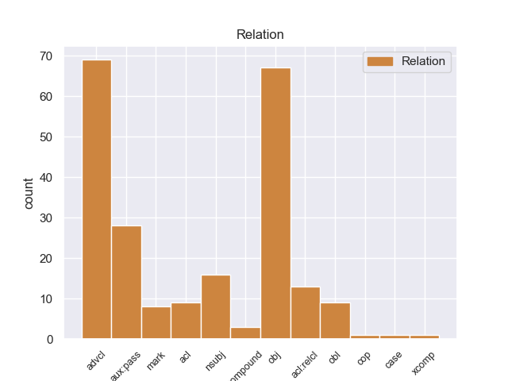
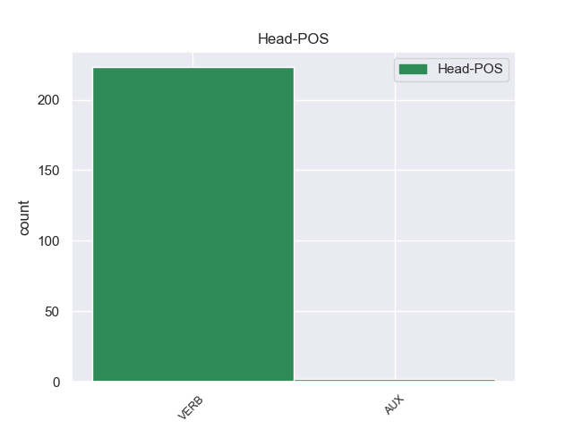
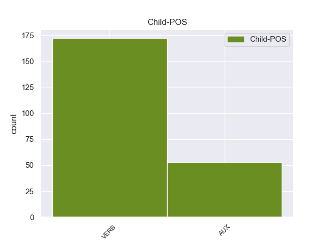

Distribution of features within this leaf



Agreement Rules sorted by frequency.
- When the dependent token is the adverbial clause modifier(advcl) of the head token, and the head token is VERB
1 यदि _ _ _ _ 0 _ _ _
2 मैं _ _ _ _ 0 _ _ _
3 इस _ _ _ _ 0 _ _ _
4 पर _ _ _ _ 0 _ _ _
5 कुछ _ _ _ _ 0 _ _ _
6 कहूंगा कह VERB VM Gender=Masc|Mood=Ind|Number=Sing|Person=3|Tense=Fut|VerbForm=Fin|Voice=Act 11 advcl _ ChunkId=VGF|ChunkType=head|Stype=declarative|Tam=gA|Translit=kahūṁgā|Vib=गा
7 तो _ _ _ _ 0 _ _ _
8 इसकी _ _ _ _ 0 _ _ _
9 तुरंत _ _ _ _ 0 _ _ _
10 प्रतिक्रिया _ _ _ _ 0 _ _ _
11 होगी हो VERB VM Gender=Fem|Mood=Ind|Number=Sing|Person=3|Tense=Fut|VerbForm=Fin|Voice=Act 0 _ _ _
12 । _ _ _ _ 0 _ _ _
1 रिश्वत _ _ _ _ 0 _ _ _
2 लेने _ _ _ _ 0 _ _ _
3 वाले _ _ _ _ 0 _ _ _
4 को _ _ _ _ 0 _ _ _
5 भी _ _ _ _ 0 _ _ _
6 इस _ _ _ _ 0 _ _ _
7 बात _ _ _ _ 0 _ _ _
8 की _ _ _ _ 0 _ _ _
9 जानकारी _ _ _ _ 0 _ _ _
10 होगी हो VERB VM Gender=Fem|Mood=Ind|Number=Sing|Person=3|Tense=Fut|VerbForm=Fin|Voice=Act 18 obj _ _
11 तो _ _ _ _ 0 _ _ _
12 वह _ _ _ _ 0 _ _ _
13 धड़ल्ले _ _ _ _ 0 _ _ _
14 से _ _ _ _ 0 _ _ _
15 रिश्वत _ _ _ _ 0 _ _ _
16 लेने _ _ _ _ 0 _ _ _
17 से _ _ _ _ 0 _ _ _
18 बचेगा बच VERB VM Gender=Masc|Mood=Ind|Number=Sing|Person=3|Tense=Fut|VerbForm=Fin|Voice=Act 0 _ _ _
19 । _ _ _ _ 0 _ _ _
1 जो _ _ _ _ 0 _ _ _
2 कहीं _ _ _ _ 0 _ _ _
3 दर्ज _ _ _ _ 0 _ _ _
4 नहीं _ _ _ _ 0 _ _ _
5 होते _ _ _ _ 0 _ _ _
6 ग्रामीण _ _ _ _ 0 _ _ _
7 जीवन _ _ _ _ 0 _ _ _
8 में _ _ _ _ 0 _ _ _
9 तो _ _ _ _ 0 _ _ _
10 महिलाओं _ _ _ _ 0 _ _ _
11 के _ _ _ _ 0 _ _ _
12 योगदान _ _ _ _ 0 _ _ _
13 के _ _ _ _ 0 _ _ _
14 बगैर _ _ _ _ 0 _ _ _
15 कृषि _ _ _ _ 0 _ _ _
16 कार्य _ _ _ _ 0 _ _ _
17 संभव _ _ _ _ 0 _ _ _
18 ही _ _ _ _ 0 _ _ _
19 नहीं _ _ _ _ 0 _ _ _
20 हैं _ _ _ _ 0 _ _ _
21 शहरों _ _ _ _ 0 _ _ _
22 में _ _ _ _ 0 _ _ _
23 भी _ _ _ _ 0 _ _ _
24 स्थिति _ _ _ _ 0 _ _ _
25 अलग _ _ _ _ 0 _ _ _
26 नहीं _ _ _ _ 0 _ _ _
27 है _ _ _ _ 0 _ _ _
28 हाल _ _ _ _ 0 _ _ _
29 के _ _ _ _ 0 _ _ _
30 वर्षों _ _ _ _ 0 _ _ _
31 में _ _ _ _ 0 _ _ _
32 शिक्षित _ _ _ _ 0 _ _ _
33 औरतों _ _ _ _ 0 _ _ _
34 के _ _ _ _ 0 _ _ _
35 एक _ _ _ _ 0 _ _ _
36 बड़े _ _ _ _ 0 _ _ _
37 तबके _ _ _ _ 0 _ _ _
38 ने _ _ _ _ 0 _ _ _
39 रोजी _ _ _ _ 0 _ _ _
40 - _ _ _ _ 0 _ _ _
41 रोजगार _ _ _ _ 0 _ _ _
42 के _ _ _ _ 0 _ _ _
43 नए _ _ _ _ 0 _ _ _
44 - _ _ _ _ 0 _ _ _
45 नए _ _ _ _ 0 _ _ _
46 क्षेत्रों _ _ _ _ 0 _ _ _
47 में _ _ _ _ 0 _ _ _
48 प्रवेश _ _ _ _ 0 _ _ _
49 किया _ _ _ _ 0 _ _ _
50 है _ _ _ _ 0 _ _ _
51 लेकिन _ _ _ _ 0 _ _ _
52 एक _ _ _ _ 0 _ _ _
53 बड़ी _ _ _ _ 0 _ _ _
54 संख्या _ _ _ _ 0 _ _ _
55 उनकी _ _ _ _ 0 _ _ _
56 भी _ _ _ _ 0 _ _ _
57 है _ _ _ _ 0 _ _ _
58 , _ _ _ _ 0 _ _ _
59 जिन्होंने _ _ _ _ 0 _ _ _
60 सोच _ _ _ _ 0 _ _ _
61 - _ _ _ _ 0 _ _ _
62 समझकर _ _ _ _ 0 _ _ _
63 हाउस _ _ _ _ 0 _ _ _
64 वाइफ _ _ _ _ 0 _ _ _
65 रहना _ _ _ _ 0 _ _ _
66 स्वीकार _ _ _ _ 0 _ _ _
67 किया _ _ _ _ 0 _ _ _
68 है _ _ _ _ 0 _ _ _
69 ताकि _ _ _ _ 0 _ _ _
70 वे _ _ _ _ 0 _ _ _
71 घर _ _ _ _ 0 _ _ _
72 परिवार _ _ _ _ 0 _ _ _
73 को _ _ _ _ 0 _ _ _
74 पर्याप्त _ _ _ _ 0 _ _ _
75 समय _ _ _ _ 0 _ _ _
76 दे _ _ _ _ 0 _ _ _
77 सकें _ _ _ _ 0 _ _ _
78 और _ _ _ _ 0 _ _ _
79 अपने _ _ _ _ 0 _ _ _
80 बच्चों _ _ _ _ 0 _ _ _
81 का _ _ _ _ 0 _ _ _
82 भविष्य _ _ _ _ 0 _ _ _
83 बना _ _ _ _ 0 _ _ _
84 सकें _ _ _ _ 0 _ _ _
85 वे _ _ _ _ 0 _ _ _
86 रोजमर्रा _ _ _ _ 0 _ _ _
87 के _ _ _ _ 0 _ _ _
88 जीवन _ _ _ _ 0 _ _ _
89 को _ _ _ _ 0 _ _ _
90 बेहतर _ _ _ _ 0 _ _ _
91 बनाने _ _ _ _ 0 _ _ _
92 के _ _ _ _ 0 _ _ _
93 लिए _ _ _ _ 0 _ _ _
94 जो _ _ _ _ 0 _ _ _
95 योगदान _ _ _ _ 0 _ _ _
96 दे _ _ _ _ 0 _ _ _
97 रही _ _ _ _ 0 _ _ _
98 हैं _ _ _ _ 0 _ _ _
99 उसका _ _ _ _ 0 _ _ _
100 महत्व _ _ _ _ 0 _ _ _
101 किसी _ _ _ _ 0 _ _ _
102 भी _ _ _ _ 0 _ _ _
103 रूप _ _ _ _ 0 _ _ _
104 में _ _ _ _ 0 _ _ _
105 कम _ _ _ _ 0 _ _ _
106 नहीं _ _ _ _ 0 _ _ _
107 है है AUX VM Mood=Ind|Number=Sing|Person=3|Tense=Pres|VerbForm=Fin|Voice=Act 111 nsubj _ SpacesAfter=\n
108 यह _ _ _ _ 0 _ _ _
109 अलग _ _ _ _ 0 _ _ _
110 बात _ _ _ _ 0 _ _ _
111 है है VERB VM Mood=Ind|Number=Sing|Person=3|Tense=Pres|VerbForm=Fin|Voice=Act 0 _ _ _
112 कि _ _ _ _ 0 _ _ _
113 विभिन्न _ _ _ _ 0 _ _ _
114 उत्पादक _ _ _ _ 0 _ _ _
115 सेक्टरों _ _ _ _ 0 _ _ _
116 की _ _ _ _ 0 _ _ _
117 तरह _ _ _ _ 0 _ _ _
118 उनके _ _ _ _ 0 _ _ _
119 काम _ _ _ _ 0 _ _ _
120 को _ _ _ _ 0 _ _ _
121 आंकने _ _ _ _ 0 _ _ _
122 का _ _ _ _ 0 _ _ _
123 कोई _ _ _ _ 0 _ _ _
124 ठोस _ _ _ _ 0 _ _ _
125 पैमाना _ _ _ _ 0 _ _ _
126 हमारे _ _ _ _ 0 _ _ _
127 पास _ _ _ _ 0 _ _ _
128 नहीं _ _ _ _ 0 _ _ _
129 है _ _ _ _ 0 _ _ _
1 इसलिए _ _ _ _ 0 _ _ _
2 क़ानून _ _ _ _ 0 _ _ _
3 मे _ _ _ _ 0 _ _ _
4 जो _ _ _ _ 0 _ _ _
5 इरादतन _ _ _ _ 0 _ _ _
6 जुर्म _ _ _ _ 0 _ _ _
7 है _ _ _ _ 0 _ _ _
8 और _ _ _ _ 0 _ _ _
9 जो _ _ _ _ 0 _ _ _
10 मुझे _ _ _ _ 0 _ _ _
11 नागरिक _ _ _ _ 0 _ _ _
12 का _ _ _ _ 0 _ _ _
13 सबसेबड़ा _ _ _ _ 0 _ _ _
14 कर्तव्य _ _ _ _ 0 _ _ _
15 मालूम _ _ _ _ 0 _ _ _
16 होता _ _ _ _ 0 _ _ _
17 है _ _ _ _ 0 _ _ _
18 , _ _ _ _ 0 _ _ _
19 उसके _ _ _ _ 0 _ _ _
20 लिए _ _ _ _ 0 _ _ _
21 पूर्ण _ _ _ _ 0 _ _ _
22 दण्ड _ _ _ _ 0 _ _ _
23 को _ _ _ _ 0 _ _ _
24 निमन्त्रण _ _ _ _ 0 _ _ _
25 देने _ _ _ _ 0 _ _ _
26 औरप्रसन्नतापूर्वक _ _ _ _ 0 _ _ _
27 भोगने _ _ _ _ 0 _ _ _
28 पर _ _ _ _ 0 _ _ _
29 मैं मैं VERB VM Mood=Ind|Number=Plur|Person=3|Tense=Pres|VerbForm=Fin|Voice=Act 0 _ _ _
30 तुला _ _ _ _ 0 _ _ _
31 हूं है AUX VAUX Mood=Ind|Number=Sing|Person=1|Tense=Pres|VerbForm=Fin 29 aux:pass _ _
32 . _ _ _ _ 0 _ _ _
33 इसलिए _ _ _ _ 0 _ _ _
34 न्यायाधीश _ _ _ _ 0 _ _ _
35 और _ _ _ _ 0 _ _ _
36 पंच _ _ _ _ 0 _ _ _
37 महोदय _ _ _ _ 0 _ _ _
38 , _ _ _ _ 0 _ _ _
39 आपके _ _ _ _ 0 _ _ _
40 लिए _ _ _ _ 0 _ _ _
41 केवल _ _ _ _ 0 _ _ _
42 एक _ _ _ _ 0 _ _ _
43 ही _ _ _ _ 0 _ _ _
44 मार्ग _ _ _ _ 0 _ _ _
45 खुला _ _ _ _ 0 _ _ _
46 है _ _ _ _ 0 _ _ _
47 , _ _ _ _ 0 _ _ _
48 वह _ _ _ _ 0 _ _ _
49 यह _ _ _ _ 0 _ _ _
50 कि _ _ _ _ 0 _ _ _
51 आप _ _ _ _ 0 _ _ _
52 अनुभव _ _ _ _ 0 _ _ _
53 करते _ _ _ _ 0 _ _ _
54 हों _ _ _ _ 0 _ _ _
55 कि _ _ _ _ 0 _ _ _
56 जिसक़ानून _ _ _ _ 0 _ _ _
57 को _ _ _ _ 0 _ _ _
58 आप _ _ _ _ 0 _ _ _
59 चलाते _ _ _ _ 0 _ _ _
60 हैं _ _ _ _ 0 _ _ _
61 , _ _ _ _ 0 _ _ _
62 वह _ _ _ _ 0 _ _ _
63 बुरा _ _ _ _ 0 _ _ _
64 है _ _ _ _ 0 _ _ _
65 और _ _ _ _ 0 _ _ _
66 उसमें _ _ _ _ 0 _ _ _
67 वास्तव _ _ _ _ 0 _ _ _
68 में _ _ _ _ 0 _ _ _
69 मैं _ _ _ _ 0 _ _ _
70 निरपराध _ _ _ _ 0 _ _ _
71 हूं _ _ _ _ 0 _ _ _
72 , _ _ _ _ 0 _ _ _
73 तो _ _ _ _ 0 _ _ _
74 आप _ _ _ _ 0 _ _ _
75 अपने _ _ _ _ 0 _ _ _
76 पदों _ _ _ _ 0 _ _ _
77 से _ _ _ _ 0 _ _ _
78 इस्तीफा _ _ _ _ 0 _ _ _
79 दे _ _ _ _ 0 _ _ _
80 दें _ _ _ _ 0 _ _ _
81 या _ _ _ _ 0 _ _ _
82 बुराई _ _ _ _ 0 _ _ _
83 से _ _ _ _ 0 _ _ _
84 सम्बन्ध _ _ _ _ 0 _ _ _
85 तोड़ _ _ _ _ 0 _ _ _
86 दें _ _ _ _ 0 _ _ _
87 , _ _ _ _ 0 _ _ _
88 या _ _ _ _ 0 _ _ _
89 यदिआपका _ _ _ _ 0 _ _ _
90 विश्वास _ _ _ _ 0 _ _ _
91 हो _ _ _ _ 0 _ _ _
92 कि _ _ _ _ 0 _ _ _
93 जिस _ _ _ _ 0 _ _ _
94 प्रणाली _ _ _ _ 0 _ _ _
95 और _ _ _ _ 0 _ _ _
96 क़ानून _ _ _ _ 0 _ _ _
97 को _ _ _ _ 0 _ _ _
98 चलाने _ _ _ _ 0 _ _ _
99 में _ _ _ _ 0 _ _ _
100 आप _ _ _ _ 0 _ _ _
101 मदद _ _ _ _ 0 _ _ _
102 करते _ _ _ _ 0 _ _ _
103 हैं _ _ _ _ 0 _ _ _
104 , _ _ _ _ 0 _ _ _
105 वे _ _ _ _ 0 _ _ _
106 इस _ _ _ _ 0 _ _ _
107 देश _ _ _ _ 0 _ _ _
108 के _ _ _ _ 0 _ _ _
109 लोगों _ _ _ _ 0 _ _ _
110 के _ _ _ _ 0 _ _ _
111 लिए _ _ _ _ 0 _ _ _
112 अच्छे _ _ _ _ 0 _ _ _
113 हैं _ _ _ _ 0 _ _ _
114 , _ _ _ _ 0 _ _ _
115 अतः _ _ _ _ 0 _ _ _
116 मेरी _ _ _ _ 0 _ _ _
117 कार्यवाही _ _ _ _ 0 _ _ _
118 सार्वजनिक _ _ _ _ 0 _ _ _
119 हितको _ _ _ _ 0 _ _ _
120 हानि _ _ _ _ 0 _ _ _
121 - _ _ _ _ 0 _ _ _
122 कारक _ _ _ _ 0 _ _ _
123 है _ _ _ _ 0 _ _ _
124 , _ _ _ _ 0 _ _ _
125 तो _ _ _ _ 0 _ _ _
126 आप _ _ _ _ 0 _ _ _
127 मुझे _ _ _ _ 0 _ _ _
128 कड़े _ _ _ _ 0 _ _ _
129 - _ _ _ _ 0 _ _ _
130 से _ _ _ _ 0 _ _ _
131 - _ _ _ _ 0 _ _ _
132 कड़ा _ _ _ _ 0 _ _ _
133 दण्ड _ _ _ _ 0 _ _ _
134 दें _ _ _ _ 0 _ _ _
135 . _ _ _ _ 0 _ _ _
136 " _ _ _ _ 0 _ _ _
1 मैंने _ _ _ _ 0 _ _ _
2 सोचा _ _ _ _ 0 _ _ _
3 था _ _ _ _ 0 _ _ _
4 तुम _ _ _ _ 0 _ _ _
5 बदलोगी बदलोगी VERB VM Gender=Fem|Mood=Ind|Number=Sing|Person=3|Tense=Fut|VerbForm=Fin|Voice=Act 30 obl _ _
6 , _ _ _ _ 0 _ _ _
7 पर _ _ _ _ 0 _ _ _
8 तुम _ _ _ _ 0 _ _ _
9 नहीं _ _ _ _ 0 _ _ _
10 बदलीं _ _ _ _ 0 _ _ _
11 . _ _ _ _ 0 _ _ _
12 मैं _ _ _ _ 0 _ _ _
13 कोशिश _ _ _ _ 0 _ _ _
14 करके _ _ _ _ 0 _ _ _
15 हार _ _ _ _ 0 _ _ _
16 गया _ _ _ _ 0 _ _ _
17 . _ _ _ _ 0 _ _ _
18 मैं _ _ _ _ 0 _ _ _
19 जानता _ _ _ _ 0 _ _ _
20 हूं _ _ _ _ 0 _ _ _
21 तुम _ _ _ _ 0 _ _ _
22 अपनी _ _ _ _ 0 _ _ _
23 गंदी _ _ _ _ 0 _ _ _
24 केंचुल _ _ _ _ 0 _ _ _
25 को _ _ _ _ 0 _ _ _
26 उतार _ _ _ _ 0 _ _ _
27 कर _ _ _ _ 0 _ _ _
28 नहीं _ _ _ _ 0 _ _ _
29 फेंक _ _ _ _ 0 _ _ _
30 पाओगी पाओगी VERB VM Gender=Fem|Mood=Ind|Number=Sing|Person=3|Tense=Fut|VerbForm=Fin|Voice=Act 0 _ _ _
31 . _ _ _ _ 0 _ _ _
32 " _ _ _ _ 0 _ _ _
1 जो _ _ _ _ 0 _ _ _
2 कहीं _ _ _ _ 0 _ _ _
3 दर्ज _ _ _ _ 0 _ _ _
4 नहीं _ _ _ _ 0 _ _ _
5 होते _ _ _ _ 0 _ _ _
6 ग्रामीण _ _ _ _ 0 _ _ _
7 जीवन _ _ _ _ 0 _ _ _
8 में _ _ _ _ 0 _ _ _
9 तो _ _ _ _ 0 _ _ _
10 महिलाओं _ _ _ _ 0 _ _ _
11 के _ _ _ _ 0 _ _ _
12 योगदान _ _ _ _ 0 _ _ _
13 के _ _ _ _ 0 _ _ _
14 बगैर _ _ _ _ 0 _ _ _
15 कृषि _ _ _ _ 0 _ _ _
16 कार्य _ _ _ _ 0 _ _ _
17 संभव _ _ _ _ 0 _ _ _
18 ही _ _ _ _ 0 _ _ _
19 नहीं _ _ _ _ 0 _ _ _
20 हैं _ _ _ _ 0 _ _ _
21 शहरों _ _ _ _ 0 _ _ _
22 में _ _ _ _ 0 _ _ _
23 भी _ _ _ _ 0 _ _ _
24 स्थिति _ _ _ _ 0 _ _ _
25 अलग _ _ _ _ 0 _ _ _
26 नहीं _ _ _ _ 0 _ _ _
27 है _ _ _ _ 0 _ _ _
28 हाल _ _ _ _ 0 _ _ _
29 के _ _ _ _ 0 _ _ _
30 वर्षों _ _ _ _ 0 _ _ _
31 में _ _ _ _ 0 _ _ _
32 शिक्षित _ _ _ _ 0 _ _ _
33 औरतों _ _ _ _ 0 _ _ _
34 के _ _ _ _ 0 _ _ _
35 एक _ _ _ _ 0 _ _ _
36 बड़े _ _ _ _ 0 _ _ _
37 तबके _ _ _ _ 0 _ _ _
38 ने _ _ _ _ 0 _ _ _
39 रोजी _ _ _ _ 0 _ _ _
40 - _ _ _ _ 0 _ _ _
41 रोजगार _ _ _ _ 0 _ _ _
42 के _ _ _ _ 0 _ _ _
43 नए _ _ _ _ 0 _ _ _
44 - _ _ _ _ 0 _ _ _
45 नए _ _ _ _ 0 _ _ _
46 क्षेत्रों _ _ _ _ 0 _ _ _
47 में _ _ _ _ 0 _ _ _
48 प्रवेश _ _ _ _ 0 _ _ _
49 किया _ _ _ _ 0 _ _ _
50 है _ _ _ _ 0 _ _ _
51 लेकिन _ _ _ _ 0 _ _ _
52 एक _ _ _ _ 0 _ _ _
53 बड़ी _ _ _ _ 0 _ _ _
54 संख्या _ _ _ _ 0 _ _ _
55 उनकी _ _ _ _ 0 _ _ _
56 भी _ _ _ _ 0 _ _ _
57 है _ _ _ _ 0 _ _ _
58 , _ _ _ _ 0 _ _ _
59 जिन्होंने _ _ _ _ 0 _ _ _
60 सोच _ _ _ _ 0 _ _ _
61 - _ _ _ _ 0 _ _ _
62 समझकर _ _ _ _ 0 _ _ _
63 हाउस _ _ _ _ 0 _ _ _
64 वाइफ _ _ _ _ 0 _ _ _
65 रहना _ _ _ _ 0 _ _ _
66 स्वीकार _ _ _ _ 0 _ _ _
67 किया _ _ _ _ 0 _ _ _
68 है _ _ _ _ 0 _ _ _
69 ताकि _ _ _ _ 0 _ _ _
70 वे _ _ _ _ 0 _ _ _
71 घर _ _ _ _ 0 _ _ _
72 परिवार _ _ _ _ 0 _ _ _
73 को _ _ _ _ 0 _ _ _
74 पर्याप्त _ _ _ _ 0 _ _ _
75 समय _ _ _ _ 0 _ _ _
76 दे _ _ _ _ 0 _ _ _
77 सकें _ _ _ _ 0 _ _ _
78 और _ _ _ _ 0 _ _ _
79 अपने _ _ _ _ 0 _ _ _
80 बच्चों _ _ _ _ 0 _ _ _
81 का _ _ _ _ 0 _ _ _
82 भविष्य _ _ _ _ 0 _ _ _
83 बना _ _ _ _ 0 _ _ _
84 सकें _ _ _ _ 0 _ _ _
85 वे _ _ _ _ 0 _ _ _
86 रोजमर्रा _ _ _ _ 0 _ _ _
87 के _ _ _ _ 0 _ _ _
88 जीवन _ _ _ _ 0 _ _ _
89 को _ _ _ _ 0 _ _ _
90 बेहतर _ _ _ _ 0 _ _ _
91 बनाने _ _ _ _ 0 _ _ _
92 के _ _ _ _ 0 _ _ _
93 लिए _ _ _ _ 0 _ _ _
94 जो _ _ _ _ 0 _ _ _
95 योगदान _ _ _ _ 0 _ _ _
96 दे _ _ _ _ 0 _ _ _
97 रही _ _ _ _ 0 _ _ _
98 हैं _ _ _ _ 0 _ _ _
99 उसका _ _ _ _ 0 _ _ _
100 महत्व _ _ _ _ 0 _ _ _
101 किसी _ _ _ _ 0 _ _ _
102 भी _ _ _ _ 0 _ _ _
103 रूप _ _ _ _ 0 _ _ _
104 में _ _ _ _ 0 _ _ _
105 कम _ _ _ _ 0 _ _ _
106 नहीं _ _ _ _ 0 _ _ _
107 है _ _ _ _ 0 _ _ _
108 यह _ _ _ _ 0 _ _ _
109 अलग _ _ _ _ 0 _ _ _
110 बात _ _ _ _ 0 _ _ _
111 है है VERB VM Mood=Ind|Number=Sing|Person=3|Tense=Pres|VerbForm=Fin|Voice=Act 0 _ _ _
112 कि _ _ _ _ 0 _ _ _
113 विभिन्न _ _ _ _ 0 _ _ _
114 उत्पादक _ _ _ _ 0 _ _ _
115 सेक्टरों _ _ _ _ 0 _ _ _
116 की _ _ _ _ 0 _ _ _
117 तरह _ _ _ _ 0 _ _ _
118 उनके _ _ _ _ 0 _ _ _
119 काम _ _ _ _ 0 _ _ _
120 को _ _ _ _ 0 _ _ _
121 आंकने _ _ _ _ 0 _ _ _
122 का _ _ _ _ 0 _ _ _
123 कोई _ _ _ _ 0 _ _ _
124 ठोस _ _ _ _ 0 _ _ _
125 पैमाना _ _ _ _ 0 _ _ _
126 हमारे _ _ _ _ 0 _ _ _
127 पास _ _ _ _ 0 _ _ _
128 नहीं _ _ _ _ 0 _ _ _
129 है है VERB VM Mood=Ind|Number=Sing|Person=3|Tense=Pres|VerbForm=Fin|Voice=Act 111 acl _ SpacesAfter=\n
1 तब _ _ _ _ 0 _ _ _
2 उन्होंने _ _ _ _ 0 _ _ _
3 महसूस _ _ _ _ 0 _ _ _
4 किया _ _ _ _ 0 _ _ _
5 कि _ _ _ _ 0 _ _ _
6 उनकी _ _ _ _ 0 _ _ _
7 बातचीत _ _ _ _ 0 _ _ _
8 , _ _ _ _ 0 _ _ _
9 गपशप _ _ _ _ 0 _ _ _
10 , _ _ _ _ 0 _ _ _
11 चैटिंग _ _ _ _ 0 _ _ _
12 , _ _ _ _ 0 _ _ _
13 शेयरिंग _ _ _ _ 0 _ _ _
14 सहित _ _ _ _ 0 _ _ _
15 ढेर _ _ _ _ 0 _ _ _
16 सारी _ _ _ _ 0 _ _ _
17 चीजों _ _ _ _ 0 _ _ _
18 का _ _ _ _ 0 _ _ _
19 सहूलियत _ _ _ _ 0 _ _ _
20 भरा _ _ _ _ 0 _ _ _
21 दायरा _ _ _ _ 0 _ _ _
22 बिना _ _ _ _ 0 _ _ _
23 किसी _ _ _ _ 0 _ _ _
24 पूर्व _ _ _ _ 0 _ _ _
25 सूचना _ _ _ _ 0 _ _ _
26 के _ _ _ _ 0 _ _ _
27 रातोरात _ _ _ _ 0 _ _ _
28 बदल _ _ _ _ 0 _ _ _
29 गया _ _ _ _ 0 _ _ _
30 है _ _ _ _ 0 _ _ _
31 एक _ _ _ _ 0 _ _ _
32 छोटे _ _ _ _ 0 _ _ _
33 से _ _ _ _ 0 _ _ _
34 परिवर्तन _ _ _ _ 0 _ _ _
35 ने _ _ _ _ 0 _ _ _
36 कई _ _ _ _ 0 _ _ _
37 नए _ _ _ _ 0 _ _ _
38 आयामों _ _ _ _ 0 _ _ _
39 को _ _ _ _ 0 _ _ _
40 खोल _ _ _ _ 0 _ _ _
41 दिया _ _ _ _ 0 _ _ _
42 था _ _ _ _ 0 _ _ _
43 कॉमनवेल्थगेम्स _ _ _ _ 0 _ _ _
44 के _ _ _ _ 0 _ _ _
45 लिए _ _ _ _ 0 _ _ _
46 सोहनी _ _ _ _ 0 _ _ _
47 सलोनी _ _ _ _ 0 _ _ _
48 दुलहन _ _ _ _ 0 _ _ _
49 का _ _ _ _ 0 _ _ _
50 रूप _ _ _ _ 0 _ _ _
51 लेती _ _ _ _ 0 _ _ _
52 दिल्ली _ _ _ _ 0 _ _ _
53 के _ _ _ _ 0 _ _ _
54 किसी _ _ _ _ 0 _ _ _
55 चौराहे _ _ _ _ 0 _ _ _
56 पर _ _ _ _ 0 _ _ _
57 जब _ _ _ _ 0 _ _ _
58 चमचमाती _ _ _ _ 0 _ _ _
59 लालरंग _ _ _ _ 0 _ _ _
60 की _ _ _ _ 0 _ _ _
61 एसी _ _ _ _ 0 _ _ _
62 बस _ _ _ _ 0 _ _ _
63 गुजरती _ _ _ _ 0 _ _ _
64 है _ _ _ _ 0 _ _ _
65 तो _ _ _ _ 0 _ _ _
66 एकबारगी _ _ _ _ 0 _ _ _
67 यकीन _ _ _ _ 0 _ _ _
68 नहीं _ _ _ _ 0 _ _ _
69 होता _ _ _ _ 0 _ _ _
70 कि _ _ _ _ 0 _ _ _
71 तस्वीर _ _ _ _ 0 _ _ _
72 का _ _ _ _ 0 _ _ _
73 एक _ _ _ _ 0 _ _ _
74 बदनुमा _ _ _ _ 0 _ _ _
75 पहलू _ _ _ _ 0 _ _ _
76 भी _ _ _ _ 0 _ _ _
77 है _ _ _ _ 0 _ _ _
78 पब्लिक _ _ _ _ 0 _ _ _
79 ट्रांसपोर्ट _ _ _ _ 0 _ _ _
80 का _ _ _ _ 0 _ _ _
81 अहम _ _ _ _ 0 _ _ _
82 हिस्सा _ _ _ _ 0 _ _ _
83 बन _ _ _ _ 0 _ _ _
84 चुके _ _ _ _ 0 _ _ _
85 55000 _ _ _ _ 0 _ _ _
86 ऑटो _ _ _ _ 0 _ _ _
87 दिल्ली _ _ _ _ 0 _ _ _
88 की _ _ _ _ 0 _ _ _
89 लाइफ _ _ _ _ 0 _ _ _
90 लाइन _ _ _ _ 0 _ _ _
91 बनने _ _ _ _ 0 _ _ _
92 की _ _ _ _ 0 _ _ _
93 बजाय _ _ _ _ 0 _ _ _
94 मजबूरी _ _ _ _ 0 _ _ _
95 का _ _ _ _ 0 _ _ _
96 सौदा _ _ _ _ 0 _ _ _
97 बन _ _ _ _ 0 _ _ _
98 चुके _ _ _ _ 0 _ _ _
99 हैं _ _ _ _ 0 _ _ _
100 मुंबई _ _ _ _ 0 _ _ _
101 की _ _ _ _ 0 _ _ _
102 टैक्सी _ _ _ _ 0 _ _ _
103 से _ _ _ _ 0 _ _ _
104 तुलना _ _ _ _ 0 _ _ _
105 करें _ _ _ _ 0 _ _ _
106 तो _ _ _ _ 0 _ _ _
107 ये _ _ _ _ 0 _ _ _
108 ऑटो _ _ _ _ 0 _ _ _
109 कहीं _ _ _ _ 0 _ _ _
110 आसपास _ _ _ _ 0 _ _ _
111 भी _ _ _ _ 0 _ _ _
112 नहीं _ _ _ _ 0 _ _ _
113 ठहरते _ _ _ _ 0 _ _ _
114 जबकि _ _ _ _ 0 _ _ _
115 सचाई _ _ _ _ 0 _ _ _
116 यह _ _ _ _ 0 _ _ _
117 है _ _ _ _ 0 _ _ _
118 कि _ _ _ _ 0 _ _ _
119 दोनों _ _ _ _ 0 _ _ _
120 की _ _ _ _ 0 _ _ _
121 भूमिका _ _ _ _ 0 _ _ _
122 एक _ _ _ _ 0 _ _ _
123 जैसी _ _ _ _ 0 _ _ _
124 ही _ _ _ _ 0 _ _ _
125 है _ _ _ _ 0 _ _ _
126 दिल्ली _ _ _ _ 0 _ _ _
127 में _ _ _ _ 0 _ _ _
128 सीएनजी _ _ _ _ 0 _ _ _
129 के _ _ _ _ 0 _ _ _
130 रेट _ _ _ _ 0 _ _ _
131 बढ़ते _ _ _ _ 0 _ _ _
132 हैं _ _ _ _ 0 _ _ _
133 तो _ _ _ _ 0 _ _ _
134 ऑटो _ _ _ _ 0 _ _ _
135 वाले _ _ _ _ 0 _ _ _
136 तुरंत _ _ _ _ 0 _ _ _
137 हड़ताल _ _ _ _ 0 _ _ _
138 की _ _ _ _ 0 _ _ _
139 धमकी _ _ _ _ 0 _ _ _
140 दे _ _ _ _ 0 _ _ _
141 डालते _ _ _ _ 0 _ _ _
142 हैं _ _ _ _ 0 _ _ _
143 यह _ _ _ _ 0 _ _ _
144 जानते _ _ _ _ 0 _ _ _
145 हुए _ _ _ _ 0 _ _ _
146 भी _ _ _ _ 0 _ _ _
147 यह _ _ _ _ 0 _ _ _
148 धमकी _ _ _ _ 0 _ _ _
149 नाजायज _ _ _ _ 0 _ _ _
150 है _ _ _ _ 0 _ _ _
151 , _ _ _ _ 0 _ _ _
152 सरकार _ _ _ _ 0 _ _ _
153 झट _ _ _ _ 0 _ _ _
154 से _ _ _ _ 0 _ _ _
155 किराया _ _ _ _ 0 _ _ _
156 बढ़ाने _ _ _ _ 0 _ _ _
157 का _ _ _ _ 0 _ _ _
158 आश्वासन _ _ _ _ 0 _ _ _
159 दे _ _ _ _ 0 _ _ _
160 डालती _ _ _ _ 0 _ _ _
161 है _ _ _ _ 0 _ _ _
162 इस _ _ _ _ 0 _ _ _
163 बात _ _ _ _ 0 _ _ _
164 से _ _ _ _ 0 _ _ _
165 इनकार _ _ _ _ 0 _ _ _
166 नहीं _ _ _ _ 0 _ _ _
167 किया _ _ _ _ 0 _ _ _
168 जा _ _ _ _ 0 _ _ _
169 सकता _ _ _ _ 0 _ _ _
170 कि _ _ _ _ 0 _ _ _
171 सीएनजी _ _ _ _ 0 _ _ _
172 की _ _ _ _ 0 _ _ _
173 कीमत _ _ _ _ 0 _ _ _
174 में _ _ _ _ 0 _ _ _
175 पिछले _ _ _ _ 0 _ _ _
176 एक _ _ _ _ 0 _ _ _
177 साल _ _ _ _ 0 _ _ _
178 में _ _ _ _ 0 _ _ _
179 करीब _ _ _ _ 0 _ _ _
180 10रुपये _ _ _ _ 0 _ _ _
181 की _ _ _ _ 0 _ _ _
182 बढ़ोतरी _ _ _ _ 0 _ _ _
183 का _ _ _ _ 0 _ _ _
184 सीधा _ _ _ _ 0 _ _ _
185 असर _ _ _ _ 0 _ _ _
186 ऑटो _ _ _ _ 0 _ _ _
187 वालों _ _ _ _ 0 _ _ _
188 पर _ _ _ _ 0 _ _ _
189 पड़ा _ _ _ _ 0 _ _ _
190 है _ _ _ _ 0 _ _ _
191 अपनी _ _ _ _ 0 _ _ _
192 कार _ _ _ _ 0 _ _ _
193 में _ _ _ _ 0 _ _ _
194 सीएनजी _ _ _ _ 0 _ _ _
195 किट _ _ _ _ 0 _ _ _
196 लगवाने _ _ _ _ 0 _ _ _
197 वाला _ _ _ _ 0 _ _ _
198 बाबू _ _ _ _ 0 _ _ _
199 भी _ _ _ _ 0 _ _ _
200 सीएनजी _ _ _ _ 0 _ _ _
201 की _ _ _ _ 0 _ _ _
202 बढ़ती _ _ _ _ 0 _ _ _
203 कीमत _ _ _ _ 0 _ _ _
204 देखकर _ _ _ _ 0 _ _ _
205 ठगा _ _ _ _ 0 _ _ _
206 सा _ _ _ _ 0 _ _ _
207 महसूस _ _ _ _ 0 _ _ _
208 कर _ _ _ _ 0 _ _ _
209 रहा _ _ _ _ 0 _ _ _
210 है _ _ _ _ 0 _ _ _
211 तो _ _ _ _ 0 _ _ _
212 ऑटो _ _ _ _ 0 _ _ _
213 चालक _ _ _ _ 0 _ _ _
214 की _ _ _ _ 0 _ _ _
215 रोजी _ _ _ _ 0 _ _ _
216 - _ _ _ _ 0 _ _ _
217 रोटी _ _ _ _ 0 _ _ _
218 ही _ _ _ _ 0 _ _ _
219 सीएनजी _ _ _ _ 0 _ _ _
220 के _ _ _ _ 0 _ _ _
221 साथ _ _ _ _ 0 _ _ _
222 जुड़ी _ _ _ _ 0 _ _ _
223 है _ _ _ _ 0 _ _ _
224 अगर _ _ _ _ 0 _ _ _
225 एक _ _ _ _ 0 _ _ _
226 ऑटो _ _ _ _ 0 _ _ _
227 चालक _ _ _ _ 0 _ _ _
228 की _ _ _ _ 0 _ _ _
229 इकॉनमी _ _ _ _ 0 _ _ _
230 पर _ _ _ _ 0 _ _ _
231 नजर _ _ _ _ 0 _ _ _
232 डालें _ _ _ _ 0 _ _ _
233 तो _ _ _ _ 0 _ _ _
234 मामला _ _ _ _ 0 _ _ _
235 ज्यादा _ _ _ _ 0 _ _ _
236 स्पष्ट _ _ _ _ 0 _ _ _
237 हो _ _ _ _ 0 _ _ _
238 जाता _ _ _ _ 0 _ _ _
239 है है AUX VAUX Mood=Ind|Number=Sing|Person=3|Tense=Pres|VerbForm=Fin 339 mark _ SpacesAfter=\n
240 एक _ _ _ _ 0 _ _ _
241 ऑटो _ _ _ _ 0 _ _ _
242 एक _ _ _ _ 0 _ _ _
243 दिन _ _ _ _ 0 _ _ _
244 में _ _ _ _ 0 _ _ _
245 औसतन _ _ _ _ 0 _ _ _
246 120 _ _ _ _ 0 _ _ _
247 से _ _ _ _ 0 _ _ _
248 140किमी _ _ _ _ 0 _ _ _
249 . _ _ _ _ 0 _ _ _
250 चलता _ _ _ _ 0 _ _ _
251 है _ _ _ _ 0 _ _ _
252 जिस _ _ _ _ 0 _ _ _
253 पर _ _ _ _ 0 _ _ _
254 लगभग _ _ _ _ 0 _ _ _
255 4किलो _ _ _ _ 0 _ _ _
256 गैस _ _ _ _ 0 _ _ _
257 खर्च _ _ _ _ 0 _ _ _
258 होती _ _ _ _ 0 _ _ _
259 है _ _ _ _ 0 _ _ _
260 इस _ _ _ _ 0 _ _ _
261 तरह _ _ _ _ 0 _ _ _
262 गैस _ _ _ _ 0 _ _ _
263 की _ _ _ _ 0 _ _ _
264 कीमत _ _ _ _ 0 _ _ _
265 में _ _ _ _ 0 _ _ _
266 बढ़ोतरी _ _ _ _ 0 _ _ _
267 से _ _ _ _ 0 _ _ _
268 उस _ _ _ _ 0 _ _ _
269 पर _ _ _ _ 0 _ _ _
270 20 _ _ _ _ 0 _ _ _
271 - _ _ _ _ 0 _ _ _
272 22 _ _ _ _ 0 _ _ _
273 रुपये _ _ _ _ 0 _ _ _
274 का _ _ _ _ 0 _ _ _
275 ही _ _ _ _ 0 _ _ _
276 भार _ _ _ _ 0 _ _ _
277 पड़ेगा _ _ _ _ 0 _ _ _
278 आईजीएल _ _ _ _ 0 _ _ _
279 के _ _ _ _ 0 _ _ _
280 अनुसार _ _ _ _ 0 _ _ _
281 उस _ _ _ _ 0 _ _ _
282 पर _ _ _ _ 0 _ _ _
283 16पैसे _ _ _ _ 0 _ _ _
284 प्रतिकिमी _ _ _ _ 0 _ _ _
285 . _ _ _ _ 0 _ _ _
286 का _ _ _ _ 0 _ _ _
287 असर _ _ _ _ 0 _ _ _
288 पड़ेगा _ _ _ _ 0 _ _ _
289 जबकि _ _ _ _ 0 _ _ _
290 इस _ _ _ _ 0 _ _ _
291 समय _ _ _ _ 0 _ _ _
292 वह _ _ _ _ 0 _ _ _
293 रोजाना _ _ _ _ 0 _ _ _
294 600 _ _ _ _ 0 _ _ _
295 - _ _ _ _ 0 _ _ _
296 700रुपये _ _ _ _ 0 _ _ _
297 कमाता _ _ _ _ 0 _ _ _
298 है _ _ _ _ 0 _ _ _
299 अगर _ _ _ _ 0 _ _ _
300 ऑटो _ _ _ _ 0 _ _ _
301 किराये _ _ _ _ 0 _ _ _
302 पर _ _ _ _ 0 _ _ _
303 है _ _ _ _ 0 _ _ _
304 तो _ _ _ _ 0 _ _ _
305 उसके _ _ _ _ 0 _ _ _
306 लिए _ _ _ _ 0 _ _ _
307 जीवन _ _ _ _ 0 _ _ _
308 वाकई _ _ _ _ 0 _ _ _
309 मुश्किल _ _ _ _ 0 _ _ _
310 है _ _ _ _ 0 _ _ _
311 क्योंकि _ _ _ _ 0 _ _ _
312 उसे _ _ _ _ 0 _ _ _
313 रोजाना _ _ _ _ 0 _ _ _
314 250 _ _ _ _ 0 _ _ _
315 - _ _ _ _ 0 _ _ _
316 300रुपये _ _ _ _ 0 _ _ _
317 स्कूटर _ _ _ _ 0 _ _ _
318 किराये _ _ _ _ 0 _ _ _
319 के _ _ _ _ 0 _ _ _
320 रूप _ _ _ _ 0 _ _ _
321 में _ _ _ _ 0 _ _ _
322 चुकाने _ _ _ _ 0 _ _ _
323 पड़ते _ _ _ _ 0 _ _ _
324 हैं _ _ _ _ 0 _ _ _
325 जाहिर _ _ _ _ 0 _ _ _
326 है _ _ _ _ 0 _ _ _
327 कि _ _ _ _ 0 _ _ _
328 250 _ _ _ _ 0 _ _ _
329 - _ _ _ _ 0 _ _ _
330 300रुपये _ _ _ _ 0 _ _ _
331 रोजाना _ _ _ _ 0 _ _ _
332 की _ _ _ _ 0 _ _ _
333 आमदनी _ _ _ _ 0 _ _ _
334 से _ _ _ _ 0 _ _ _
335 जीवन _ _ _ _ 0 _ _ _
336 चलाना _ _ _ _ 0 _ _ _
337 आसान _ _ _ _ 0 _ _ _
338 नहीं _ _ _ _ 0 _ _ _
339 है है VERB VM Mood=Ind|Number=Sing|Person=3|Tense=Pres|VerbForm=Fin|Voice=Act 0 _ _ _
340 अभी _ _ _ _ 0 _ _ _
341 किराया _ _ _ _ 0 _ _ _
342 पहले _ _ _ _ 0 _ _ _
343 एककिमी _ _ _ _ 0 _ _ _
344 . _ _ _ _ 0 _ _ _
345 के _ _ _ _ 0 _ _ _
346 लिए _ _ _ _ 0 _ _ _
347 10रुपये _ _ _ _ 0 _ _ _
348 और _ _ _ _ 0 _ _ _
349 उसके _ _ _ _ 0 _ _ _
350 बाद _ _ _ _ 0 _ _ _
351 4 _ _ _ _ 0 _ _ _
352 . _ _ _ _ 0 _ _ _
353 50रुपये _ _ _ _ 0 _ _ _
354 प्रतिकिमी _ _ _ _ 0 _ _ _
355 . _ _ _ _ 0 _ _ _
356 है _ _ _ _ 0 _ _ _
357 जबकि _ _ _ _ 0 _ _ _
358 ऑटो _ _ _ _ 0 _ _ _
359 वाले _ _ _ _ 0 _ _ _
360 पहले _ _ _ _ 0 _ _ _
361 किमी _ _ _ _ 0 _ _ _
362 . _ _ _ _ 0 _ _ _
363 के _ _ _ _ 0 _ _ _
364 लिए _ _ _ _ 0 _ _ _
365 20रुपये _ _ _ _ 0 _ _ _
366 और _ _ _ _ 0 _ _ _
367 उसके _ _ _ _ 0 _ _ _
368 बाद _ _ _ _ 0 _ _ _
369 8रुपये _ _ _ _ 0 _ _ _
370 प्रति _ _ _ _ 0 _ _ _
371 किमी _ _ _ _ 0 _ _ _
372 . _ _ _ _ 0 _ _ _
373 की _ _ _ _ 0 _ _ _
374 मांग _ _ _ _ 0 _ _ _
375 कर _ _ _ _ 0 _ _ _
376 रहे _ _ _ _ 0 _ _ _
377 हैं _ _ _ _ 0 _ _ _
378 यह _ _ _ _ 0 _ _ _
379 एक _ _ _ _ 0 _ _ _
380 अलग _ _ _ _ 0 _ _ _
381 मुद्दा _ _ _ _ 0 _ _ _
382 है _ _ _ _ 0 _ _ _
383 कि _ _ _ _ 0 _ _ _
384 सरकार _ _ _ _ 0 _ _ _
385 इनकी _ _ _ _ 0 _ _ _
386 मांग _ _ _ _ 0 _ _ _
387 में _ _ _ _ 0 _ _ _
388 से _ _ _ _ 0 _ _ _
389 कितने _ _ _ _ 0 _ _ _
390 प्रतिशत _ _ _ _ 0 _ _ _
391 की _ _ _ _ 0 _ _ _
392 भरपाई _ _ _ _ 0 _ _ _
393 करती _ _ _ _ 0 _ _ _
394 है _ _ _ _ 0 _ _ _
395 लेकिन _ _ _ _ 0 _ _ _
396 सवाल _ _ _ _ 0 _ _ _
397 तो _ _ _ _ 0 _ _ _
398 यह _ _ _ _ 0 _ _ _
399 है _ _ _ _ 0 _ _ _
400 कि _ _ _ _ 0 _ _ _
401 क्या _ _ _ _ 0 _ _ _
402 ये _ _ _ _ 0 _ _ _
403 ऑटो _ _ _ _ 0 _ _ _
404 वाले _ _ _ _ 0 _ _ _
405 उतना _ _ _ _ 0 _ _ _
406 ही _ _ _ _ 0 _ _ _
407 किराया _ _ _ _ 0 _ _ _
408 लेंगे _ _ _ _ 0 _ _ _
409 , _ _ _ _ 0 _ _ _
1 आप _ _ _ _ 0 _ _ _
2 लोगों _ _ _ _ 0 _ _ _
3 को _ _ _ _ 0 _ _ _
4 यह _ _ _ _ 0 _ _ _
5 स्वीकार _ _ _ _ 0 _ _ _
6 करने _ _ _ _ 0 _ _ _
7 में _ _ _ _ 0 _ _ _
8 कोई _ _ _ _ 0 _ _ _
9 आपत्ति _ _ _ _ 0 _ _ _
10 न _ _ _ _ 0 _ _ _
11 होगी _ _ _ _ 0 _ _ _
12 किजो _ _ _ _ 0 _ _ _
13 पुरुष _ _ _ _ 0 _ _ _
14 स्वंय _ _ _ _ 0 _ _ _
15 जख्मी _ _ _ _ 0 _ _ _
16 होकर _ _ _ _ 0 _ _ _
17 भी _ _ _ _ 0 _ _ _
18 एक _ _ _ _ 0 _ _ _
19 गरीब _ _ _ _ 0 _ _ _
20 किसान _ _ _ _ 0 _ _ _
21 की _ _ _ _ 0 _ _ _
22 भरीहुई _ _ _ _ 0 _ _ _
23 गाड़ी _ _ _ _ 0 _ _ _
24 को _ _ _ _ 0 _ _ _
25 दलदल _ _ _ _ 0 _ _ _
26 सेनिकालकर _ _ _ _ 0 _ _ _
27 नाले _ _ _ _ 0 _ _ _
28 के _ _ _ _ 0 _ _ _
29 ऊपर _ _ _ _ 0 _ _ _
30 चढ़ा _ _ _ _ 0 _ _ _
31 दे _ _ _ _ 0 _ _ _
32 , _ _ _ _ 0 _ _ _
33 उसके _ _ _ _ 0 _ _ _
34 ह्रदय _ _ _ _ 0 _ _ _
35 में _ _ _ _ 0 _ _ _
36 साहस _ _ _ _ 0 _ _ _
37 , _ _ _ _ 0 _ _ _
38 आत्मबल _ _ _ _ 0 _ _ _
39 और _ _ _ _ 0 _ _ _
40 उदारता _ _ _ _ 0 _ _ _
41 का _ _ _ _ 0 _ _ _
42 वासहै _ _ _ _ 0 _ _ _
43 . _ _ _ _ 0 _ _ _
44 ऐसा _ _ _ _ 0 _ _ _
45 आदमी _ _ _ _ 0 _ _ _
46 गरीबों _ _ _ _ 0 _ _ _
47 को _ _ _ _ 0 _ _ _
48 कभी _ _ _ _ 0 _ _ _
49 न _ _ _ _ 0 _ _ _
50 सताएगा सता VERB VM Gender=Masc|Mood=Ind|Number=Sing|Person=2|Polite=Form|Tense=Fut|VerbForm=Fin|Voice=Act 0 _ _ _
51 . _ _ _ _ 0 _ _ _
52 उसका _ _ _ _ 0 _ _ _
53 संकल्प _ _ _ _ 0 _ _ _
54 दृढ़ _ _ _ _ 0 _ _ _
55 है _ _ _ _ 0 _ _ _
56 , _ _ _ _ 0 _ _ _
57 जो _ _ _ _ 0 _ _ _
58 उसके _ _ _ _ 0 _ _ _
59 चित्तको _ _ _ _ 0 _ _ _
60 स्थिर _ _ _ _ 0 _ _ _
61 रखेगा रख VERB VM Gender=Masc|Mood=Ind|Number=Sing|Person=3|Tense=Fut|VerbForm=Fin|Voice=Act 50 acl:relcl _ _
62 . _ _ _ _ 0 _ _ _
63 वह _ _ _ _ 0 _ _ _
64 चाहे _ _ _ _ 0 _ _ _
65 धोखा _ _ _ _ 0 _ _ _
66 खा _ _ _ _ 0 _ _ _
67 जाए _ _ _ _ 0 _ _ _
68 , _ _ _ _ 0 _ _ _
69 परंतु _ _ _ _ 0 _ _ _
70 दया _ _ _ _ 0 _ _ _
71 और _ _ _ _ 0 _ _ _
72 धर्म _ _ _ _ 0 _ _ _
73 से _ _ _ _ 0 _ _ _
74 कभी _ _ _ _ 0 _ _ _
75 न _ _ _ _ 0 _ _ _
76 हटेगा _ _ _ _ 0 _ _ _
77 . _ _ _ _ 0 _ _ _
78 " _ _ _ _ 0 _ _ _
1 झाड _ _ _ _ 0 _ _ _
2 पोंछ _ _ _ _ 0 _ _ _
3 कर _ _ _ _ 0 _ _ _
4 ठीक _ _ _ _ 0 _ _ _
5 किया _ _ _ _ 0 _ _ _
6 एक _ _ _ _ 0 _ _ _
7 अधूरे _ _ _ _ 0 _ _ _
8 चित्र _ _ _ _ 0 _ _ _
9 को _ _ _ _ 0 _ _ _
10 पूरा _ _ _ _ 0 _ _ _
11 करने _ _ _ _ 0 _ _ _
12 लगी _ _ _ _ 0 _ _ _
13 , _ _ _ _ 0 _ _ _
14 जिस _ _ _ _ 0 _ _ _
15 में _ _ _ _ 0 _ _ _
16 सामाजिक _ _ _ _ 0 _ _ _
17 मान्यताओं _ _ _ _ 0 _ _ _
18 का _ _ _ _ 0 _ _ _
19 कटघरा _ _ _ _ 0 _ _ _
20 बेल _ _ _ _ 0 _ _ _
21 की _ _ _ _ 0 _ _ _
22 तरह _ _ _ _ 0 _ _ _
23 अंकित _ _ _ _ 0 _ _ _
24 करके _ _ _ _ 0 _ _ _
25 कब _ _ _ _ 0 _ _ _
26 से _ _ _ _ 0 _ _ _
27 छोड़ _ _ _ _ 0 _ _ _
28 दिया _ _ _ _ 0 _ _ _
29 था _ _ _ _ 0 _ _ _
30 . _ _ _ _ 0 _ _ _
31 उस _ _ _ _ 0 _ _ _
32 कटघरे _ _ _ _ 0 _ _ _
33 में _ _ _ _ 0 _ _ _
34 एक _ _ _ _ 0 _ _ _
35 ओर _ _ _ _ 0 _ _ _
36 कल्पना _ _ _ _ 0 _ _ _
37 का _ _ _ _ 0 _ _ _
38 द्वार _ _ _ _ 0 _ _ _
39 खोला _ _ _ _ 0 _ _ _
40 . _ _ _ _ 0 _ _ _
41 प्रेम _ _ _ _ 0 _ _ _
42 का _ _ _ _ 0 _ _ _
43 वृक्ष _ _ _ _ 0 _ _ _
44 उगाया _ _ _ _ 0 _ _ _
45 . _ _ _ _ 0 _ _ _
46 भला _ _ _ _ 0 _ _ _
47 हुआ _ _ _ _ 0 _ _ _
48 वह _ _ _ _ 0 _ _ _
49 शन्नो _ _ _ _ 0 _ _ _
50 न _ _ _ _ 0 _ _ _
51 बनी _ _ _ _ 0 _ _ _
52 . _ _ _ _ 0 _ _ _
53 उस _ _ _ _ 0 _ _ _
54 की _ _ _ _ 0 _ _ _
55 तरह _ _ _ _ 0 _ _ _
56 झुलसने _ _ _ _ 0 _ _ _
57 से _ _ _ _ 0 _ _ _
58 तो _ _ _ _ 0 _ _ _
59 अच्छी _ _ _ _ 0 _ _ _
60 है _ _ _ _ 0 _ _ _
61 . _ _ _ _ 0 _ _ _
62 यह _ _ _ _ 0 _ _ _
63 अंतःकरण _ _ _ _ 0 _ _ _
64 की _ _ _ _ 0 _ _ _
65 लौ _ _ _ _ 0 _ _ _
66 . _ _ _ _ 0 _ _ _
67 इसी _ _ _ _ 0 _ _ _
68 को _ _ _ _ 0 _ _ _
69 उपासना _ _ _ _ 0 _ _ _
70 की _ _ _ _ 0 _ _ _
71 ज्योति _ _ _ _ 0 _ _ _
72 बना _ _ _ _ 0 _ _ _
73 लेगी _ _ _ _ 0 _ _ _
74 . _ _ _ _ 0 _ _ _
75 प्यास _ _ _ _ 0 _ _ _
76 का _ _ _ _ 0 _ _ _
77 पोखर _ _ _ _ 0 _ _ _
78 जब _ _ _ _ 0 _ _ _
79 भी _ _ _ _ 0 _ _ _
80 उमगा उमग VERB VM Gender=Masc|Mood=Ind|Number=Sing|Person=3|Tense=Fut|VerbForm=Fin|Voice=Act 81 compound _ _
81 करेगा कर VERB VM Gender=Masc|Mood=Ind|Number=Sing|Person=3|Tense=Fut|VerbForm=Fin|Voice=Act 0 _ _ _
82 उस _ _ _ _ 0 _ _ _
83 में _ _ _ _ 0 _ _ _
84 सुधियों _ _ _ _ 0 _ _ _
85 की _ _ _ _ 0 _ _ _
86 नाव _ _ _ _ 0 _ _ _
87 तैरा _ _ _ _ 0 _ _ _
88 कर _ _ _ _ 0 _ _ _
89 खिलखिला _ _ _ _ 0 _ _ _
90 लिया _ _ _ _ 0 _ _ _
91 करेगी _ _ _ _ 0 _ _ _
92 . _ _ _ _ 0 _ _ _
93 दहकना _ _ _ _ 0 _ _ _
94 तो _ _ _ _ 0 _ _ _
95 यूं _ _ _ _ 0 _ _ _
96 भी _ _ _ _ 0 _ _ _
97 है _ _ _ _ 0 _ _ _
98 और _ _ _ _ 0 _ _ _
99 यूं _ _ _ _ 0 _ _ _
100 भी _ _ _ _ 0 _ _ _
101 . _ _ _ _ 0 _ _ _
1 संवाददाताओं _ _ _ _ 0 _ _ _
2 का _ _ _ _ 0 _ _ _
3 कहना _ _ _ _ 0 _ _ _
4 है है VERB VM Mood=Ind|Number=Sing|Person=3|Tense=Pres|VerbForm=Fin|Voice=Act 0 _ _ _
5 कि _ _ _ _ 0 _ _ _
6 अमरीका _ _ _ _ 0 _ _ _
7 का _ _ _ _ 0 _ _ _
8 वित्तीय _ _ _ _ 0 _ _ _
9 घाटा _ _ _ _ 0 _ _ _
10 क़रीब _ _ _ _ 0 _ _ _
11 एककरोड़खरबडॉलर _ _ _ _ 0 _ _ _
12 का _ _ _ _ 0 _ _ _
13 है है AUX VM Mood=Ind|Number=Sing|Person=3|Tense=Pres|VerbForm=Fin|Voice=Act 4 cop _ _
14 और _ _ _ _ 0 _ _ _
15 वेतन _ _ _ _ 0 _ _ _
16 वृद्धि _ _ _ _ 0 _ _ _
17 में _ _ _ _ 0 _ _ _
18 रोकलगनेा _ _ _ _ 0 _ _ _
19 से _ _ _ _ 0 _ _ _
20 हुई _ _ _ _ 0 _ _ _
21 बचत _ _ _ _ 0 _ _ _
22 से _ _ _ _ 0 _ _ _
23 उसका _ _ _ _ 0 _ _ _
24 महज़ _ _ _ _ 0 _ _ _
25 एक _ _ _ _ 0 _ _ _
26 अंश _ _ _ _ 0 _ _ _
27 ही _ _ _ _ 0 _ _ _
28 पूरा _ _ _ _ 0 _ _ _
29 किया _ _ _ _ 0 _ _ _
30 जा _ _ _ _ 0 _ _ _
31 सकेगा _ _ _ _ 0 _ _ _
32 । _ _ _ _ 0 _ _ _
1 बड़ाबेटा _ _ _ _ 0 _ _ _
2 रफीयत _ _ _ _ 0 _ _ _
3 . _ _ _ _ 0 _ _ _
4 रफी _ _ _ _ 0 _ _ _
5 - _ _ _ _ 0 _ _ _
6 यत _ _ _ _ 0 _ _ _
7 का _ _ _ _ 0 _ _ _
8 विवाह _ _ _ _ 0 _ _ _
9 भी _ _ _ _ 0 _ _ _
10 कई _ _ _ _ 0 _ _ _
11 वर्ष _ _ _ _ 0 _ _ _
12 पहले _ _ _ _ 0 _ _ _
13 हो _ _ _ _ 0 _ _ _
14 गया _ _ _ _ 0 _ _ _
15 है _ _ _ _ 0 _ _ _
16 . _ _ _ _ 0 _ _ _
17 दो _ _ _ _ 0 _ _ _
18 बच्चियां _ _ _ _ 0 _ _ _
19 हुईहैं हुईहै AUX VM Mood=Ind|Number=Plur|Person=3|Tense=Pres|VerbForm=Fin|Voice=Act 79 case _ _
20 . _ _ _ _ 0 _ _ _
21 छोटे _ _ _ _ 0 _ _ _
22 का _ _ _ _ 0 _ _ _
23 विवाह _ _ _ _ 0 _ _ _
24 अभी _ _ _ _ 0 _ _ _
25 नहीं _ _ _ _ 0 _ _ _
26 हुआ _ _ _ _ 0 _ _ _
27 है _ _ _ _ 0 _ _ _
28 . _ _ _ _ 0 _ _ _
29 उसकी _ _ _ _ 0 _ _ _
30 उम्र _ _ _ _ 0 _ _ _
31 बत्तीस _ _ _ _ 0 _ _ _
32 पार _ _ _ _ 0 _ _ _
33 कर _ _ _ _ 0 _ _ _
34 गयी _ _ _ _ 0 _ _ _
35 है _ _ _ _ 0 _ _ _
36 . _ _ _ _ 0 _ _ _
37 विवाहन _ _ _ _ 0 _ _ _
38 होने _ _ _ _ 0 _ _ _
39 के _ _ _ _ 0 _ _ _
40 कारण _ _ _ _ 0 _ _ _
41 कई _ _ _ _ 0 _ _ _
42 हैं _ _ _ _ 0 _ _ _
43 . _ _ _ _ 0 _ _ _
44 बफी _ _ _ _ 0 _ _ _
45 उसका _ _ _ _ 0 _ _ _
46 नाम _ _ _ _ 0 _ _ _
47 है _ _ _ _ 0 _ _ _
48 . _ _ _ _ 0 _ _ _
49 बफी _ _ _ _ 0 _ _ _
50 बोना _ _ _ _ 0 _ _ _
51 है _ _ _ _ 0 _ _ _
52 , _ _ _ _ 0 _ _ _
53 उसकी _ _ _ _ 0 _ _ _
54 ऊंचाई _ _ _ _ 0 _ _ _
55 साढ़े _ _ _ _ 0 _ _ _
56 तीनफुट _ _ _ _ 0 _ _ _
57 के _ _ _ _ 0 _ _ _
58 करीब _ _ _ _ 0 _ _ _
59 है _ _ _ _ 0 _ _ _
60 . _ _ _ _ 0 _ _ _
61 एक _ _ _ _ 0 _ _ _
62 आंख _ _ _ _ 0 _ _ _
63 जन्म _ _ _ _ 0 _ _ _
64 से _ _ _ _ 0 _ _ _
65 ही _ _ _ _ 0 _ _ _
66 कानी _ _ _ _ 0 _ _ _
67 है _ _ _ _ 0 _ _ _
68 . _ _ _ _ 0 _ _ _
69 बायें _ _ _ _ 0 _ _ _
70 हाथ _ _ _ _ 0 _ _ _
71 की _ _ _ _ 0 _ _ _
72 दो _ _ _ _ 0 _ _ _
73 अंगुलियों _ _ _ _ 0 _ _ _
74 काएक _ _ _ _ 0 _ _ _
75 - _ _ _ _ 0 _ _ _
76 एक _ _ _ _ 0 _ _ _
77 पोर _ _ _ _ 0 _ _ _
78 नहीं _ _ _ _ 0 _ _ _
79 है है VERB VM Mood=Ind|Number=Sing|Person=3|Tense=Pres|VerbForm=Fin|Voice=Act 0 _ _ _
80 . _ _ _ _ 0 _ _ _
1 मुनाफाहोगा मुनाफाहो AUX VAUX Gender=Masc|Mood=Ind|Number=Sing|Person=3|Tense=Fut|VerbForm=Fin 5 xcomp _ _
2 तो _ _ _ _ 0 _ _ _
3 दोनों _ _ _ _ 0 _ _ _
4 बाँट _ _ _ _ 0 _ _ _
5 लेंगे ले VERB VM Gender=Masc|Mood=Ind|Number=Plur|Person=3|Tense=Fut|VerbForm=Fin|Voice=Act 0 _ _ _
6 . _ _ _ _ 0 _ _ _
7 " _ _ _ _ 0 _ _ _
Disagree Examples:
1 अमरीकी _ _ _ _ 0 _ _ _
2 राजदूतों _ _ _ _ 0 _ _ _
3 का _ _ _ _ 0 _ _ _
4 कहना _ _ _ _ 0 _ _ _
5 है है VERB VM Mood=Ind|Number=Sing|Person=3|Tense=Pres|VerbForm=Fin|Voice=Act 0 _ _ _
6 कि _ _ _ _ 0 _ _ _
7 ये _ _ _ _ 0 _ _ _
8 स्पष्ट _ _ _ _ 0 _ _ _
9 नहीं _ _ _ _ 0 _ _ _
10 था _ _ _ _ 0 _ _ _
11 कि _ _ _ _ 0 _ _ _
12 देश _ _ _ _ 0 _ _ _
13 के _ _ _ _ 0 _ _ _
14 सर्वोच्च _ _ _ _ 0 _ _ _
15 नेतृत्व _ _ _ _ 0 _ _ _
16 , _ _ _ _ 0 _ _ _
17 यानि _ _ _ _ 0 _ _ _
18 राष्ट्रपति _ _ _ _ 0 _ _ _
19 और _ _ _ _ 0 _ _ _
20 प्रधानमंत्री _ _ _ _ 0 _ _ _
21 को _ _ _ _ 0 _ _ _
22 इस _ _ _ _ 0 _ _ _
23 की _ _ _ _ 0 _ _ _
24 सूचना _ _ _ _ 0 _ _ _
25 पहलेसे _ _ _ _ 0 _ _ _
26 थी था VERB VM Gender=Fem|Mood=Ind|Number=Sing|Tense=Past|VerbForm=Fin|Voice=Act 5 acl _ _
27 या _ _ _ _ 0 _ _ _
28 नहीं _ _ _ _ 0 _ _ _
29 । _ _ _ _ 0 _ _ _
1 राजा _ _ _ _ 0 _ _ _
2 साहब _ _ _ _ 0 _ _ _
3 अपने _ _ _ _ 0 _ _ _
4 अनुभवशील _ _ _ _ 0 _ _ _
5 नीतिकुशल _ _ _ _ 0 _ _ _
6 दीवान _ _ _ _ 0 _ _ _
7 का _ _ _ _ 0 _ _ _
8 बड़ा _ _ _ _ 0 _ _ _
9 आदरकरते _ _ _ _ 0 _ _ _
10 थे _ _ _ _ 0 _ _ _
11 . _ _ _ _ 0 _ _ _
12 बहुतसमझाया _ _ _ _ 0 _ _ _
13 , _ _ _ _ 0 _ _ _
14 लेकिन _ _ _ _ 0 _ _ _
15 जब _ _ _ _ 0 _ _ _
16 दीवान _ _ _ _ 0 _ _ _
17 साहब _ _ _ _ 0 _ _ _
18 ने _ _ _ _ 0 _ _ _
19 न _ _ _ _ 0 _ _ _
20 माना _ _ _ _ 0 _ _ _
21 तो _ _ _ _ 0 _ _ _
22 हारकर _ _ _ _ 0 _ _ _
23 उनकी _ _ _ _ 0 _ _ _
24 प्रार्थनास्वीकारकर _ _ _ _ 0 _ _ _
25 ली _ _ _ _ 0 _ _ _
26 , _ _ _ _ 0 _ _ _
27 पर _ _ _ _ 0 _ _ _
28 शर्त _ _ _ _ 0 _ _ _
29 यह _ _ _ _ 0 _ _ _
30 लगा _ _ _ _ 0 _ _ _
31 दी _ _ _ _ 0 _ _ _
32 कि _ _ _ _ 0 _ _ _
33 रियासत _ _ _ _ 0 _ _ _
34 के _ _ _ _ 0 _ _ _
35 लिए _ _ _ _ 0 _ _ _
36 नया _ _ _ _ 0 _ _ _
37 दीवान _ _ _ _ 0 _ _ _
38 आप _ _ _ _ 0 _ _ _
39 ही _ _ _ _ 0 _ _ _
40 को _ _ _ _ 0 _ _ _
41 खोजनापड़ेगा खोजनापड़ VERB VM Gender=Masc|Mood=Ind|Number=Sing|Person=3|Tense=Fut|VerbForm=Fin|Voice=Act 81 nsubj _ _
42 . _ _ _ _ 0 _ _ _
43 दूसरे _ _ _ _ 0 _ _ _
44 दिन _ _ _ _ 0 _ _ _
45 देश _ _ _ _ 0 _ _ _
46 के _ _ _ _ 0 _ _ _
47 प्रसिद्ध _ _ _ _ 0 _ _ _
48 पत्रों _ _ _ _ 0 _ _ _
49 में _ _ _ _ 0 _ _ _
50 यह _ _ _ _ 0 _ _ _
51 विज्ञापन _ _ _ _ 0 _ _ _
52 निकला _ _ _ _ 0 _ _ _
53 कि _ _ _ _ 0 _ _ _
54 देवगढ़के _ _ _ _ 0 _ _ _
55 लिए _ _ _ _ 0 _ _ _
56 एकसुयोग्य _ _ _ _ 0 _ _ _
57 दीवान _ _ _ _ 0 _ _ _
58 की _ _ _ _ 0 _ _ _
59 जरूरत _ _ _ _ 0 _ _ _
60 है _ _ _ _ 0 _ _ _
61 . _ _ _ _ 0 _ _ _
62 जो _ _ _ _ 0 _ _ _
63 सज्जन _ _ _ _ 0 _ _ _
64 अपने _ _ _ _ 0 _ _ _
65 को _ _ _ _ 0 _ _ _
66 पद _ _ _ _ 0 _ _ _
67 के _ _ _ _ 0 _ _ _
68 योग्य _ _ _ _ 0 _ _ _
69 समझेंवेवर्तमान _ _ _ _ 0 _ _ _
70 दीवान _ _ _ _ 0 _ _ _
71 सरदार _ _ _ _ 0 _ _ _
72 सुजान _ _ _ _ 0 _ _ _
73 सिंह _ _ _ _ 0 _ _ _
74 की _ _ _ _ 0 _ _ _
75 सेवा _ _ _ _ 0 _ _ _
76 में _ _ _ _ 0 _ _ _
77 उपस्थित _ _ _ _ 0 _ _ _
78 हों _ _ _ _ 0 _ _ _
79 . _ _ _ _ 0 _ _ _
80 यह _ _ _ _ 0 _ _ _
81 जरूरीनहींहै जरूरीनहींहै VERB VM Mood=Ind|Number=Sing|Person=3|Tense=Pres|VerbForm=Fin|Voice=Act 0 _ _ _
82 कि _ _ _ _ 0 _ _ _
83 वे _ _ _ _ 0 _ _ _
84 ग्रेजुएट _ _ _ _ 0 _ _ _
85 हों _ _ _ _ 0 _ _ _
86 , _ _ _ _ 0 _ _ _
87 मगर _ _ _ _ 0 _ _ _
88 ह्रष्ट _ _ _ _ 0 _ _ _
89 - _ _ _ _ 0 _ _ _
90 पुष्ट _ _ _ _ 0 _ _ _
91 होना _ _ _ _ 0 _ _ _
92 आवश्यक _ _ _ _ 0 _ _ _
93 है _ _ _ _ 0 _ _ _
94 , _ _ _ _ 0 _ _ _
95 मंदाग्निके _ _ _ _ 0 _ _ _
96 मरीजको _ _ _ _ 0 _ _ _
97 यहाँ _ _ _ _ 0 _ _ _
98 तक _ _ _ _ 0 _ _ _
99 का _ _ _ _ 0 _ _ _
100 कष्ट _ _ _ _ 0 _ _ _
101 उठाने _ _ _ _ 0 _ _ _
102 की _ _ _ _ 0 _ _ _
103 कोई _ _ _ _ 0 _ _ _
104 जरूरत _ _ _ _ 0 _ _ _
105 नहीं _ _ _ _ 0 _ _ _
106 . _ _ _ _ 0 _ _ _
107 एक _ _ _ _ 0 _ _ _
108 महीनेतक _ _ _ _ 0 _ _ _
109 उम्मीदवारोंके _ _ _ _ 0 _ _ _
110 रहन _ _ _ _ 0 _ _ _
111 - _ _ _ _ 0 _ _ _
112 सहन _ _ _ _ 0 _ _ _
113 , _ _ _ _ 0 _ _ _
114 अचार _ _ _ _ 0 _ _ _
115 - _ _ _ _ 0 _ _ _
116 विचार _ _ _ _ 0 _ _ _
117 की _ _ _ _ 0 _ _ _
118 देखभाल _ _ _ _ 0 _ _ _
119 की _ _ _ _ 0 _ _ _
120 जाएगी _ _ _ _ 0 _ _ _
121 . _ _ _ _ 0 _ _ _
122 विद्या _ _ _ _ 0 _ _ _
123 का _ _ _ _ 0 _ _ _
124 कम _ _ _ _ 0 _ _ _
125 परंतु _ _ _ _ 0 _ _ _
126 कर्तव्यका _ _ _ _ 0 _ _ _
127 अधिक _ _ _ _ 0 _ _ _
128 विचार _ _ _ _ 0 _ _ _
129 किया _ _ _ _ 0 _ _ _
130 जाएगा _ _ _ _ 0 _ _ _
131 . _ _ _ _ 0 _ _ _
132 जो _ _ _ _ 0 _ _ _
133 महाशय _ _ _ _ 0 _ _ _
134 इसपरीक्षा _ _ _ _ 0 _ _ _
135 में _ _ _ _ 0 _ _ _
136 पूरे _ _ _ _ 0 _ _ _
137 उतरेंगे _ _ _ _ 0 _ _ _
138 , _ _ _ _ 0 _ _ _
139 वे _ _ _ _ 0 _ _ _
140 इसउच्च _ _ _ _ 0 _ _ _
141 पद _ _ _ _ 0 _ _ _
142 पर _ _ _ _ 0 _ _ _
143 सुशोभित _ _ _ _ 0 _ _ _
144 होंगे _ _ _ _ 0 _ _ _
145 . _ _ _ _ 0 _ _ _
146 इस _ _ _ _ 0 _ _ _
147 विज्ञापन _ _ _ _ 0 _ _ _
148 ने _ _ _ _ 0 _ _ _
149 सारे _ _ _ _ 0 _ _ _
150 मुल्क _ _ _ _ 0 _ _ _
151 में _ _ _ _ 0 _ _ _
152 हलचल _ _ _ _ 0 _ _ _
153 मचा _ _ _ _ 0 _ _ _
154 दी _ _ _ _ 0 _ _ _
155 . _ _ _ _ 0 _ _ _
1 इस _ _ _ _ 0 _ _ _
2 सुधारकी _ _ _ _ 0 _ _ _
3 प्रक्रिया _ _ _ _ 0 _ _ _
4 में _ _ _ _ 0 _ _ _
5 आवश्यक _ _ _ _ 0 _ _ _
6 है _ _ _ _ 0 _ _ _
7 कि _ _ _ _ 0 _ _ _
8 वर्तमान _ _ _ _ 0 _ _ _
9 आयुर्वेदीय _ _ _ _ 0 _ _ _
10 शिक्षा _ _ _ _ 0 _ _ _
11 प्रणाली _ _ _ _ 0 _ _ _
12 में _ _ _ _ 0 _ _ _
13 आमूल _ _ _ _ 0 _ _ _
14 - _ _ _ _ 0 _ _ _
15 चूलपरिवर्तन _ _ _ _ 0 _ _ _
16 हों _ _ _ _ 0 _ _ _
17 , _ _ _ _ 0 _ _ _
18 जो _ _ _ _ 0 _ _ _
19 निम्न _ _ _ _ 0 _ _ _
20 आधार _ _ _ _ 0 _ _ _
21 पर _ _ _ _ 0 _ _ _
22 हो _ _ _ _ 0 _ _ _
23 सकते _ _ _ _ 0 _ _ _
24 हैं _ _ _ _ 0 _ _ _
25 - _ _ _ _ 0 _ _ _
26 आयुर्वेद _ _ _ _ 0 _ _ _
27 शिक्षा _ _ _ _ 0 _ _ _
28 के _ _ _ _ 0 _ _ _
29 पाठ्यक्रम _ _ _ _ 0 _ _ _
30 में _ _ _ _ 0 _ _ _
31 सुधारवर्तमान _ _ _ _ 0 _ _ _
32 में _ _ _ _ 0 _ _ _
33 केन्द्रीय _ _ _ _ 0 _ _ _
34 भारतीय _ _ _ _ 0 _ _ _
35 चिकित्सा _ _ _ _ 0 _ _ _
36 परिषद _ _ _ _ 0 _ _ _
37 द्वारा _ _ _ _ 0 _ _ _
38 सन् _ _ _ _ 0 _ _ _
39 १९७७ _ _ _ _ 0 _ _ _
40 से _ _ _ _ 0 _ _ _
41 विरुद्धआयुर्वेद _ _ _ _ 0 _ _ _
42 का _ _ _ _ 0 _ _ _
43 पठन _ _ _ _ 0 _ _ _
44 - _ _ _ _ 0 _ _ _
45 पाठन _ _ _ _ 0 _ _ _
46 आयुर्वेद _ _ _ _ 0 _ _ _
47 शिक्षा _ _ _ _ 0 _ _ _
48 संस्थाओं _ _ _ _ 0 _ _ _
49 पर _ _ _ _ 0 _ _ _
50 लादा _ _ _ _ 0 _ _ _
51 गया _ _ _ _ 0 _ _ _
52 है _ _ _ _ 0 _ _ _
53 . _ _ _ _ 0 _ _ _
54 जो _ _ _ _ 0 _ _ _
55 देश _ _ _ _ 0 _ _ _
56 कीवर्तमान _ _ _ _ 0 _ _ _
57 परिस्थितियों _ _ _ _ 0 _ _ _
58 में _ _ _ _ 0 _ _ _
59 दोषपूर्ण _ _ _ _ 0 _ _ _
60 हैं _ _ _ _ 0 _ _ _
61 . _ _ _ _ 0 _ _ _
62 जबकि _ _ _ _ 0 _ _ _
63 आवश्यकता _ _ _ _ 0 _ _ _
64 है _ _ _ _ 0 _ _ _
65 कि _ _ _ _ 0 _ _ _
66 हम _ _ _ _ 0 _ _ _
67 जहां _ _ _ _ 0 _ _ _
68 एक _ _ _ _ 0 _ _ _
69 ओरस्नातकोत्तर _ _ _ _ 0 _ _ _
70 शिक्षा _ _ _ _ 0 _ _ _
71 से _ _ _ _ 0 _ _ _
72 आयुर्वेद _ _ _ _ 0 _ _ _
73 विशे _ _ _ _ 0 _ _ _
74 - _ _ _ _ 0 _ _ _
75 ~ _ _ _ _ 0 _ _ _
76 षज्ञों _ _ _ _ 0 _ _ _
77 का _ _ _ _ 0 _ _ _
78 निर्माण _ _ _ _ 0 _ _ _
79 कर _ _ _ _ 0 _ _ _
80 शहरी _ _ _ _ 0 _ _ _
81 क्षेत्रों _ _ _ _ 0 _ _ _
82 मेंचिकित्सा _ _ _ _ 0 _ _ _
83 हेतु _ _ _ _ 0 _ _ _
84 प्रस्तुत _ _ _ _ 0 _ _ _
85 कर _ _ _ _ 0 _ _ _
86 सकें _ _ _ _ 0 _ _ _
87 , _ _ _ _ 0 _ _ _
88 वही _ _ _ _ 0 _ _ _
89 स्नातक _ _ _ _ 0 _ _ _
90 स्तर _ _ _ _ 0 _ _ _
91 पर _ _ _ _ 0 _ _ _
92 आवश्यक _ _ _ _ 0 _ _ _
93 आधु _ _ _ _ 0 _ _ _
94 - _ _ _ _ 0 _ _ _
95 ~ _ _ _ _ 0 _ _ _
96 निक _ _ _ _ 0 _ _ _
97 चिकित्साविज्ञान _ _ _ _ 0 _ _ _
98 से _ _ _ _ 0 _ _ _
99 सम्पन्न _ _ _ _ 0 _ _ _
100 तथा तथा VERB VM Gender=Masc|Mood=Ind|Number=Sing|Tense=Past|VerbForm=Fin|Voice=Act 121 advcl _ _
101 पूर्णतया _ _ _ _ 0 _ _ _
102 व्यावहारिक _ _ _ _ 0 _ _ _
103 आयुर्वेदज्ञ _ _ _ _ 0 _ _ _
104 ग्रामीण _ _ _ _ 0 _ _ _
105 क्षेत्रों _ _ _ _ 0 _ _ _
106 केलिए _ _ _ _ 0 _ _ _
107 दे _ _ _ _ 0 _ _ _
108 सकें _ _ _ _ 0 _ _ _
109 . _ _ _ _ 0 _ _ _
110 यह _ _ _ _ 0 _ _ _
111 आयुर्वेद _ _ _ _ 0 _ _ _
112 तथा _ _ _ _ 0 _ _ _
113 देश _ _ _ _ 0 _ _ _
114 दोनों _ _ _ _ 0 _ _ _
115 की _ _ _ _ 0 _ _ _
116 प्रगति _ _ _ _ 0 _ _ _
117 में _ _ _ _ 0 _ _ _
118 एक _ _ _ _ 0 _ _ _
119 बढ़ता _ _ _ _ 0 _ _ _
120 कदम _ _ _ _ 0 _ _ _
121 होगा हो VERB VM Gender=Masc|Mood=Ind|Number=Sing|Person=3|Tense=Fut|VerbForm=Fin|Voice=Act 0 _ _ _
122 . _ _ _ _ 0 _ _ _
123 पाठ्यक्रम _ _ _ _ 0 _ _ _
124 में _ _ _ _ 0 _ _ _
125 निम्न _ _ _ _ 0 _ _ _
126 चरणों _ _ _ _ 0 _ _ _
127 में _ _ _ _ 0 _ _ _
128 संशोधन _ _ _ _ 0 _ _ _
129 प्रस्तावित _ _ _ _ 0 _ _ _
130 हैं _ _ _ _ 0 _ _ _
131 - _ _ _ _ 0 _ _ _
132 आयुर्वेदीय _ _ _ _ 0 _ _ _
133 विषयों _ _ _ _ 0 _ _ _
134 के _ _ _ _ 0 _ _ _
135 साथ _ _ _ _ 0 _ _ _
136 - _ _ _ _ 0 _ _ _
137 साथ _ _ _ _ 0 _ _ _
138 स्नातक _ _ _ _ 0 _ _ _
139 प्रशिक्षण _ _ _ _ 0 _ _ _
140 में _ _ _ _ 0 _ _ _
141 आधुनिक _ _ _ _ 0 _ _ _
142 शरीर _ _ _ _ 0 _ _ _
143 रचना _ _ _ _ 0 _ _ _
144 , _ _ _ _ 0 _ _ _
145 शरीर _ _ _ _ 0 _ _ _
146 - _ _ _ _ 0 _ _ _
147 क्रिया _ _ _ _ 0 _ _ _
148 , _ _ _ _ 0 _ _ _
149 विकृति _ _ _ _ 0 _ _ _
150 विज्ञान _ _ _ _ 0 _ _ _
151 , _ _ _ _ 0 _ _ _
152 फार्मेकोलाजी _ _ _ _ 0 _ _ _
153 तथा _ _ _ _ 0 _ _ _
154 आधुनिक _ _ _ _ 0 _ _ _
155 चिकित्सा _ _ _ _ 0 _ _ _
156 काअध्ययन _ _ _ _ 0 _ _ _
157 - _ _ _ _ 0 _ _ _
158 अध्यापन _ _ _ _ 0 _ _ _
159 भी _ _ _ _ 0 _ _ _
160 होना _ _ _ _ 0 _ _ _
161 चाहिए _ _ _ _ 0 _ _ _
162 . _ _ _ _ 0 _ _ _
163 ताकि _ _ _ _ 0 _ _ _
164 प्रशिक्षण _ _ _ _ 0 _ _ _
165 बाद _ _ _ _ 0 _ _ _
166 में _ _ _ _ 0 _ _ _
167 व्यावहारिक _ _ _ _ 0 _ _ _
168 रूप _ _ _ _ 0 _ _ _
169 से _ _ _ _ 0 _ _ _
170 रोगके _ _ _ _ 0 _ _ _
171 उचित _ _ _ _ 0 _ _ _
172 निदान _ _ _ _ 0 _ _ _
173 में _ _ _ _ 0 _ _ _
174 लक्षण _ _ _ _ 0 _ _ _
175 हो _ _ _ _ 0 _ _ _
176 सके _ _ _ _ 0 _ _ _
177 . _ _ _ _ 0 _ _ _
178 ग्रामीण _ _ _ _ 0 _ _ _
179 अंचलों _ _ _ _ 0 _ _ _
180 में _ _ _ _ 0 _ _ _
181 प्रमुखतः _ _ _ _ 0 _ _ _
182 निम्न _ _ _ _ 0 _ _ _
183 स्तर _ _ _ _ 0 _ _ _
184 परस्वास्थ्य _ _ _ _ 0 _ _ _
185 समस्यायें _ _ _ _ 0 _ _ _
186 ही _ _ _ _ 0 _ _ _
187 सकती _ _ _ _ 0 _ _ _
188 हैं _ _ _ _ 0 _ _ _
189 . _ _ _ _ 0 _ _ _
190 १ _ _ _ _ 0 _ _ _
191 . _ _ _ _ 0 _ _ _
192 पोषण _ _ _ _ 0 _ _ _
193 २ _ _ _ _ 0 _ _ _
194 . _ _ _ _ 0 _ _ _
195 जीवाणुजन्य _ _ _ _ 0 _ _ _
196 रोग३ _ _ _ _ 0 _ _ _
197 . _ _ _ _ 0 _ _ _
198 संक्रामक _ _ _ _ 0 _ _ _
199 रोग _ _ _ _ 0 _ _ _
200 ४ _ _ _ _ 0 _ _ _
201 . _ _ _ _ 0 _ _ _
202 कृमि _ _ _ _ 0 _ _ _
203 रोग५ _ _ _ _ 0 _ _ _
204 . _ _ _ _ 0 _ _ _
205 मातृ _ _ _ _ 0 _ _ _
206 एवं _ _ _ _ 0 _ _ _
207 शिशु _ _ _ _ 0 _ _ _
208 स्वास्थ्य _ _ _ _ 0 _ _ _
209 ६ _ _ _ _ 0 _ _ _
210 . _ _ _ _ 0 _ _ _
211 परिवार _ _ _ _ 0 _ _ _
212 नियोजन७ _ _ _ _ 0 _ _ _
213 . _ _ _ _ 0 _ _ _
214 औद्योगिक _ _ _ _ 0 _ _ _
215 प्रदूषण१ _ _ _ _ 0 _ _ _
216 . _ _ _ _ 0 _ _ _
217 हमारी _ _ _ _ 0 _ _ _
218 पहली _ _ _ _ 0 _ _ _
219 समस्या _ _ _ _ 0 _ _ _
220 पोषण _ _ _ _ 0 _ _ _
221 की _ _ _ _ 0 _ _ _
222 है _ _ _ _ 0 _ _ _
223 . _ _ _ _ 0 _ _ _
224 गांवों _ _ _ _ 0 _ _ _
225 में _ _ _ _ 0 _ _ _
226 अधिकांश _ _ _ _ 0 _ _ _
227 व्यक्ति _ _ _ _ 0 _ _ _
228 अभावजन्यव्याधियों _ _ _ _ 0 _ _ _
229 से _ _ _ _ 0 _ _ _
230 ग्रसित _ _ _ _ 0 _ _ _
231 रहते _ _ _ _ 0 _ _ _
232 हैं _ _ _ _ 0 _ _ _
233 जिसका _ _ _ _ 0 _ _ _
234 कारण _ _ _ _ 0 _ _ _
235 गरीबी _ _ _ _ 0 _ _ _
236 होने _ _ _ _ 0 _ _ _
237 के _ _ _ _ 0 _ _ _
238 साथ _ _ _ _ 0 _ _ _
239 - _ _ _ _ 0 _ _ _
240 साथ _ _ _ _ 0 _ _ _
241 पोषण _ _ _ _ 0 _ _ _
242 के _ _ _ _ 0 _ _ _
243 विषयमें _ _ _ _ 0 _ _ _
244 ज्ञान _ _ _ _ 0 _ _ _
245 का _ _ _ _ 0 _ _ _
246 अभाव _ _ _ _ 0 _ _ _
247 है _ _ _ _ 0 _ _ _
248 . _ _ _ _ 0 _ _ _
249 अतः _ _ _ _ 0 _ _ _
250 प्रशिक्षण _ _ _ _ 0 _ _ _
251 में _ _ _ _ 0 _ _ _
252 अभाव _ _ _ _ 0 _ _ _
253 की _ _ _ _ 0 _ _ _
254 स्थिति _ _ _ _ 0 _ _ _
255 एवं _ _ _ _ 0 _ _ _
256 सीमित _ _ _ _ 0 _ _ _
257 संसाधनोंमें _ _ _ _ 0 _ _ _
258 भी _ _ _ _ 0 _ _ _
259 किस _ _ _ _ 0 _ _ _
260 प्रकार _ _ _ _ 0 _ _ _
261 के _ _ _ _ 0 _ _ _
262 आहार _ _ _ _ 0 _ _ _
263 से _ _ _ _ 0 _ _ _
264 स्वस्थ _ _ _ _ 0 _ _ _
265 रहा _ _ _ _ 0 _ _ _
266 जा _ _ _ _ 0 _ _ _
267 सके _ _ _ _ 0 _ _ _
268 , _ _ _ _ 0 _ _ _
1 गली _ _ _ _ 0 _ _ _
2 - _ _ _ _ 0 _ _ _
3 गली _ _ _ _ 0 _ _ _
4 , _ _ _ _ 0 _ _ _
5 घर _ _ _ _ 0 _ _ _
6 - _ _ _ _ 0 _ _ _
7 घर _ _ _ _ 0 _ _ _
8 चर्चा _ _ _ _ 0 _ _ _
9 होती _ _ _ _ 0 _ _ _
10 रहती _ _ _ _ 0 _ _ _
11 . _ _ _ _ 0 _ _ _
12 रब्ब _ _ _ _ 0 _ _ _
13 की _ _ _ _ 0 _ _ _
14 करनी _ _ _ _ 0 _ _ _
15 कुछऐसी _ _ _ _ 0 _ _ _
16 हुई _ _ _ _ 0 _ _ _
17 कि _ _ _ _ 0 _ _ _
18 उन्हीं _ _ _ _ 0 _ _ _
19 दिनों _ _ _ _ 0 _ _ _
20 गुरुद्वारे _ _ _ _ 0 _ _ _
21 की _ _ _ _ 0 _ _ _
22 ग्रंथी _ _ _ _ 0 _ _ _
23 की _ _ _ _ 0 _ _ _
24 तरीमत _ _ _ _ 0 _ _ _
25 गुजर _ _ _ _ 0 _ _ _
26 गई _ _ _ _ 0 _ _ _
27 . _ _ _ _ 0 _ _ _
28 एक _ _ _ _ 0 _ _ _
29 दिन _ _ _ _ 0 _ _ _
30 उसेठंडी _ _ _ _ 0 _ _ _
31 लगी _ _ _ _ 0 _ _ _
32 , _ _ _ _ 0 _ _ _
33 बुखार _ _ _ _ 0 _ _ _
34 आया _ _ _ _ 0 _ _ _
35 , _ _ _ _ 0 _ _ _
36 दूसरे _ _ _ _ 0 _ _ _
37 दिन _ _ _ _ 0 _ _ _
38 उसे _ _ _ _ 0 _ _ _
39 डबल _ _ _ _ 0 _ _ _
40 निमोनिया _ _ _ _ 0 _ _ _
41 हो _ _ _ _ 0 _ _ _
42 गया _ _ _ _ 0 _ _ _
43 . _ _ _ _ 0 _ _ _
44 तीसरे _ _ _ _ 0 _ _ _
45 दिन _ _ _ _ 0 _ _ _
46 वह _ _ _ _ 0 _ _ _
47 मरगई _ _ _ _ 0 _ _ _
48 . _ _ _ _ 0 _ _ _
49 आठ _ _ _ _ 0 _ _ _
50 बच्चे _ _ _ _ 0 _ _ _
51 छोड़कर _ _ _ _ 0 _ _ _
52 वह _ _ _ _ 0 _ _ _
53 चली _ _ _ _ 0 _ _ _
54 गई _ _ _ _ 0 _ _ _
55 थी _ _ _ _ 0 _ _ _
56 . _ _ _ _ 0 _ _ _
57 जैसे _ _ _ _ 0 _ _ _
58 कुलबुलाते _ _ _ _ 0 _ _ _
59 कीड़े _ _ _ _ 0 _ _ _
60 हों _ _ _ _ 0 _ _ _
61 . _ _ _ _ 0 _ _ _
62 हर _ _ _ _ 0 _ _ _
63 कोई _ _ _ _ 0 _ _ _
64 कहता _ _ _ _ 0 _ _ _
65 , _ _ _ _ 0 _ _ _
66 भाई _ _ _ _ 0 _ _ _
67 साहब _ _ _ _ 0 _ _ _
68 के _ _ _ _ 0 _ _ _
69 साथ _ _ _ _ 0 _ _ _
70 बड़ा _ _ _ _ 0 _ _ _
71 जुल्म _ _ _ _ 0 _ _ _
72 हुआ _ _ _ _ 0 _ _ _
73 है _ _ _ _ 0 _ _ _
74 . _ _ _ _ 0 _ _ _
75 औरतें _ _ _ _ 0 _ _ _
76 हाथ _ _ _ _ 0 _ _ _
77 मल _ _ _ _ 0 _ _ _
78 - _ _ _ _ 0 _ _ _
79 मलकर _ _ _ _ 0 _ _ _
80 गुरुद्वारे _ _ _ _ 0 _ _ _
81 के _ _ _ _ 0 _ _ _
82 भाईकी _ _ _ _ 0 _ _ _
83 तरीमत _ _ _ _ 0 _ _ _
84 की _ _ _ _ 0 _ _ _
85 अच्छाइयां _ _ _ _ 0 _ _ _
86 गिनवाती _ _ _ _ 0 _ _ _
87 रहतीं _ _ _ _ 0 _ _ _
88 . _ _ _ _ 0 _ _ _
89 मजाल _ _ _ _ 0 _ _ _
90 है _ _ _ _ 0 _ _ _
91 , _ _ _ _ 0 _ _ _
92 अपने _ _ _ _ 0 _ _ _
93 घर _ _ _ _ 0 _ _ _
94 गुरुद्वारे _ _ _ _ 0 _ _ _
95 की _ _ _ _ 0 _ _ _
96 कोईचीज _ _ _ _ 0 _ _ _
97 घुसने _ _ _ _ 0 _ _ _
98 दे _ _ _ _ 0 _ _ _
99 . _ _ _ _ 0 _ _ _
100 अपना _ _ _ _ 0 _ _ _
101 गुजारा _ _ _ _ 0 _ _ _
102 तनख्वाह _ _ _ _ 0 _ _ _
103 में _ _ _ _ 0 _ _ _
104 करती _ _ _ _ 0 _ _ _
105 थी _ _ _ _ 0 _ _ _
106 , _ _ _ _ 0 _ _ _
107 जो _ _ _ _ 0 _ _ _
108 उन्हें _ _ _ _ 0 _ _ _
109 गुरुद्वारे _ _ _ _ 0 _ _ _
110 कीतरफ _ _ _ _ 0 _ _ _
111 से _ _ _ _ 0 _ _ _
112 मिलती _ _ _ _ 0 _ _ _
113 थी _ _ _ _ 0 _ _ _
114 . _ _ _ _ 0 _ _ _
115 बड़ी _ _ _ _ 0 _ _ _
116 लिस्सी१ _ _ _ _ 0 _ _ _
117 औरत _ _ _ _ 0 _ _ _
118 थी _ _ _ _ 0 _ _ _
119 . _ _ _ _ 0 _ _ _
120 कभी _ _ _ _ 0 _ _ _
121 किसी _ _ _ _ 0 _ _ _
122 ने _ _ _ _ 0 _ _ _
123 उसकी _ _ _ _ 0 _ _ _
124 ऊंची _ _ _ _ 0 _ _ _
125 आवाज _ _ _ _ 0 _ _ _
126 नहींसुनी _ _ _ _ 0 _ _ _
127 . _ _ _ _ 0 _ _ _
128 छोटे _ _ _ _ 0 _ _ _
129 - _ _ _ _ 0 _ _ _
130 छोटे _ _ _ _ 0 _ _ _
131 बच्चों _ _ _ _ 0 _ _ _
132 की _ _ _ _ 0 _ _ _
133 वजह _ _ _ _ 0 _ _ _
134 से _ _ _ _ 0 _ _ _
135 उसे _ _ _ _ 0 _ _ _
136 गुरुद्वारे _ _ _ _ 0 _ _ _
137 में _ _ _ _ 0 _ _ _
138 ज्यादा _ _ _ _ 0 _ _ _
139 आने _ _ _ _ 0 _ _ _
140 की _ _ _ _ 0 _ _ _
141 फुर्सतनहीं _ _ _ _ 0 _ _ _
142 मिलती _ _ _ _ 0 _ _ _
143 थी _ _ _ _ 0 _ _ _
144 , _ _ _ _ 0 _ _ _
145 पर _ _ _ _ 0 _ _ _
146 थी _ _ _ _ 0 _ _ _
147 रब्ब _ _ _ _ 0 _ _ _
148 से _ _ _ _ 0 _ _ _
149 डरने _ _ _ _ 0 _ _ _
150 वाली _ _ _ _ 0 _ _ _
151 औरत _ _ _ _ 0 _ _ _
152 . _ _ _ _ 0 _ _ _
153 बाकी _ _ _ _ 0 _ _ _
154 गांववाली _ _ _ _ 0 _ _ _
155 आतीं _ _ _ _ 0 _ _ _
156 . _ _ _ _ 0 _ _ _
157 सुबह _ _ _ _ 0 _ _ _
158 - _ _ _ _ 0 _ _ _
159 शाममुंह _ _ _ _ 0 _ _ _
160 - _ _ _ _ 0 _ _ _
161 जबानी _ _ _ _ 0 _ _ _
162 हमदर्दी _ _ _ _ 0 _ _ _
163 जताकर _ _ _ _ 0 _ _ _
164 चली _ _ _ _ 0 _ _ _
165 जातीं _ _ _ _ 0 _ _ _
166 , _ _ _ _ 0 _ _ _
167 पर _ _ _ _ 0 _ _ _
168 यह _ _ _ _ 0 _ _ _
169 किसी _ _ _ _ 0 _ _ _
170 को _ _ _ _ 0 _ _ _
171 नहीं _ _ _ _ 0 _ _ _
172 सूझता _ _ _ _ 0 _ _ _
173 था _ _ _ _ 0 _ _ _
174 कि _ _ _ _ 0 _ _ _
175 भाईसाहब _ _ _ _ 0 _ _ _
176 अब _ _ _ _ 0 _ _ _
177 घर _ _ _ _ 0 _ _ _
178 की _ _ _ _ 0 _ _ _
179 रोटियां _ _ _ _ 0 _ _ _
180 पकाया _ _ _ _ 0 _ _ _
181 करेंगे _ _ _ _ 0 _ _ _
182 या _ _ _ _ 0 _ _ _
183 गुरुद्वारे _ _ _ _ 0 _ _ _
184 जाकर _ _ _ _ 0 _ _ _
185 कथा कथा AUX VAUX Gender=Masc|Mood=Ind|Number=Sing|Tense=Past|VerbForm=Fin 200 compound _ _
186 किया _ _ _ _ 0 _ _ _
187 करेंगे _ _ _ _ 0 _ _ _
188 , _ _ _ _ 0 _ _ _
189 घर _ _ _ _ 0 _ _ _
190 आकर _ _ _ _ 0 _ _ _
191 बच्चों _ _ _ _ 0 _ _ _
192 को _ _ _ _ 0 _ _ _
193 संभालेंगे _ _ _ _ 0 _ _ _
194 , _ _ _ _ 0 _ _ _
195 या _ _ _ _ 0 _ _ _
196 गुरुद्वारे _ _ _ _ 0 _ _ _
197 जाकर _ _ _ _ 0 _ _ _
198 कीर्तन _ _ _ _ 0 _ _ _
199 किया _ _ _ _ 0 _ _ _
200 करेंगे कर VERB VM Gender=Masc|Mood=Ind|Number=Sing|Person=3|Polite=Form|Tense=Fut|VerbForm=Fin|Voice=Act 0 _ _ _
201 ? _ _ _ _ 0 _ _ _
1 लेकिन _ _ _ _ 0 _ _ _
2 चुनाव _ _ _ _ 0 _ _ _
3 के _ _ _ _ 0 _ _ _
4 दौरान _ _ _ _ 0 _ _ _
5 जनता _ _ _ _ 0 _ _ _
6 की _ _ _ _ 0 _ _ _
7 अदालत _ _ _ _ 0 _ _ _
8 में _ _ _ _ 0 _ _ _
9 नकारे _ _ _ _ 0 _ _ _
10 जा _ _ _ _ 0 _ _ _
11 चुके _ _ _ _ 0 _ _ _
12 नेताओं _ _ _ _ 0 _ _ _
13 का _ _ _ _ 0 _ _ _
14 जोड़ _ _ _ _ 0 _ _ _
15 - _ _ _ _ 0 _ _ _
16 तोड़ _ _ _ _ 0 _ _ _
17 की _ _ _ _ 0 _ _ _
18 राजनीति _ _ _ _ 0 _ _ _
19 के _ _ _ _ 0 _ _ _
20 बल _ _ _ _ 0 _ _ _
21 पर _ _ _ _ 0 _ _ _
22 सत्ता _ _ _ _ 0 _ _ _
23 में _ _ _ _ 0 _ _ _
24 भागीदारी _ _ _ _ 0 _ _ _
25 पा _ _ _ _ 0 _ _ _
26 जाना _ _ _ _ 0 _ _ _
27 सीधे _ _ _ _ 0 _ _ _
28 तौर _ _ _ _ 0 _ _ _
29 पर _ _ _ _ 0 _ _ _
30 लोकतंत्र _ _ _ _ 0 _ _ _
31 का _ _ _ _ 0 _ _ _
32 अपमान _ _ _ _ 0 _ _ _
33 नहीं _ _ _ _ 0 _ _ _
34 तो _ _ _ _ 0 _ _ _
35 और _ _ _ _ 0 _ _ _
36 क्या _ _ _ _ 0 _ _ _
37 है _ _ _ _ 0 _ _ _
38 खास _ _ _ _ 0 _ _ _
39 बात _ _ _ _ 0 _ _ _
40 यह _ _ _ _ 0 _ _ _
41 है _ _ _ _ 0 _ _ _
42 कि _ _ _ _ 0 _ _ _
43 इन _ _ _ _ 0 _ _ _
44 स्वनामधन्य _ _ _ _ 0 _ _ _
45 नेताओं _ _ _ _ 0 _ _ _
46 को _ _ _ _ 0 _ _ _
47 जनता _ _ _ _ 0 _ _ _
48 के _ _ _ _ 0 _ _ _
49 वोटों _ _ _ _ 0 _ _ _
50 से _ _ _ _ 0 _ _ _
51 चुनकर _ _ _ _ 0 _ _ _
52 आए _ _ _ _ 0 _ _ _
53 जनप्रतिनिधि _ _ _ _ 0 _ _ _
54 विधायक _ _ _ _ 0 _ _ _
55 ही _ _ _ _ 0 _ _ _
56 संसद _ _ _ _ 0 _ _ _
57 तक _ _ _ _ 0 _ _ _
58 पहुंचाते _ _ _ _ 0 _ _ _
59 हैं _ _ _ _ 0 _ _ _
60 हालांकि _ _ _ _ 0 _ _ _
61 यह _ _ _ _ 0 _ _ _
62 भी _ _ _ _ 0 _ _ _
63 सभी _ _ _ _ 0 _ _ _
64 जानते _ _ _ _ 0 _ _ _
65 हैं _ _ _ _ 0 _ _ _
66 कि _ _ _ _ 0 _ _ _
67 इन _ _ _ _ 0 _ _ _
68 जनाधार _ _ _ _ 0 _ _ _
69 विहीन _ _ _ _ 0 _ _ _
70 नेताओं _ _ _ _ 0 _ _ _
71 को _ _ _ _ 0 _ _ _
72 संसद _ _ _ _ 0 _ _ _
73 के _ _ _ _ 0 _ _ _
74 उच्च _ _ _ _ 0 _ _ _
75 सदन _ _ _ _ 0 _ _ _
76 में _ _ _ _ 0 _ _ _
77 पहुंचाने _ _ _ _ 0 _ _ _
78 वाले _ _ _ _ 0 _ _ _
79 जनप्रतिनिधि _ _ _ _ 0 _ _ _
80 आखिर _ _ _ _ 0 _ _ _
81 किस _ _ _ _ 0 _ _ _
82 मजबूरी _ _ _ _ 0 _ _ _
83 के _ _ _ _ 0 _ _ _
84 तहत _ _ _ _ 0 _ _ _
85 उनके _ _ _ _ 0 _ _ _
86 लिए _ _ _ _ 0 _ _ _
87 मतदान _ _ _ _ 0 _ _ _
88 करते _ _ _ _ 0 _ _ _
89 हैं _ _ _ _ 0 _ _ _
90 पहले _ _ _ _ 0 _ _ _
91 तो _ _ _ _ 0 _ _ _
92 पार्टियां _ _ _ _ 0 _ _ _
93 सिर्फ _ _ _ _ 0 _ _ _
94 व्हिप _ _ _ _ 0 _ _ _
95 का _ _ _ _ 0 _ _ _
96 ही _ _ _ _ 0 _ _ _
97 डर _ _ _ _ 0 _ _ _
98 दिखाती _ _ _ _ 0 _ _ _
99 थीं _ _ _ _ 0 _ _ _
100 अबकी _ _ _ _ 0 _ _ _
101 बार _ _ _ _ 0 _ _ _
102 तो _ _ _ _ 0 _ _ _
103 बीजेपी _ _ _ _ 0 _ _ _
104 ने _ _ _ _ 0 _ _ _
105 राजस्थान _ _ _ _ 0 _ _ _
106 में _ _ _ _ 0 _ _ _
107 अपने _ _ _ _ 0 _ _ _
108 विधायकों _ _ _ _ 0 _ _ _
109 को _ _ _ _ 0 _ _ _
110 ट्रेनिंग _ _ _ _ 0 _ _ _
111 के _ _ _ _ 0 _ _ _
112 नाम _ _ _ _ 0 _ _ _
113 पर _ _ _ _ 0 _ _ _
114 बाकायदा _ _ _ _ 0 _ _ _
115 एक _ _ _ _ 0 _ _ _
116 होटल _ _ _ _ 0 _ _ _
117 में _ _ _ _ 0 _ _ _
118 बंद _ _ _ _ 0 _ _ _
119 करके _ _ _ _ 0 _ _ _
120 नए _ _ _ _ 0 _ _ _
121 ट्रेंड _ _ _ _ 0 _ _ _
122 की _ _ _ _ 0 _ _ _
123 शुरुआत _ _ _ _ 0 _ _ _
124 की _ _ _ _ 0 _ _ _
125 है _ _ _ _ 0 _ _ _
126 प्रदेश _ _ _ _ 0 _ _ _
127 की _ _ _ _ 0 _ _ _
128 सत्ता _ _ _ _ 0 _ _ _
129 के _ _ _ _ 0 _ _ _
130 लिए _ _ _ _ 0 _ _ _
131 पहले _ _ _ _ 0 _ _ _
132 भी _ _ _ _ 0 _ _ _
133 कई _ _ _ _ 0 _ _ _
134 बार _ _ _ _ 0 _ _ _
135 इस _ _ _ _ 0 _ _ _
136 तरह _ _ _ _ 0 _ _ _
137 का _ _ _ _ 0 _ _ _
138 खेल _ _ _ _ 0 _ _ _
139 खेला _ _ _ _ 0 _ _ _
140 जा _ _ _ _ 0 _ _ _
141 चुका _ _ _ _ 0 _ _ _
142 है _ _ _ _ 0 _ _ _
143 , _ _ _ _ 0 _ _ _
144 लेकिन _ _ _ _ 0 _ _ _
145 राज्यसभा _ _ _ _ 0 _ _ _
146 चुनावों _ _ _ _ 0 _ _ _
147 के _ _ _ _ 0 _ _ _
148 दौरान _ _ _ _ 0 _ _ _
149 शायद _ _ _ _ 0 _ _ _
150 यह _ _ _ _ 0 _ _ _
151 अपनी _ _ _ _ 0 _ _ _
152 तरह _ _ _ _ 0 _ _ _
153 का _ _ _ _ 0 _ _ _
154 पहला _ _ _ _ 0 _ _ _
155 प्रयोग _ _ _ _ 0 _ _ _
156 था _ _ _ _ 0 _ _ _
157 इसके _ _ _ _ 0 _ _ _
158 अलावा _ _ _ _ 0 _ _ _
159 कभी _ _ _ _ 0 _ _ _
160 भंग _ _ _ _ 0 _ _ _
161 न _ _ _ _ 0 _ _ _
162 होने _ _ _ _ 0 _ _ _
163 वाले _ _ _ _ 0 _ _ _
164 उच्च _ _ _ _ 0 _ _ _
165 सदन _ _ _ _ 0 _ _ _
166 राज्यसभा _ _ _ _ 0 _ _ _
167 का _ _ _ _ 0 _ _ _
168 एक _ _ _ _ 0 _ _ _
169 दूसरा _ _ _ _ 0 _ _ _
170 महत्वपूर्ण _ _ _ _ 0 _ _ _
171 कार्य _ _ _ _ 0 _ _ _
172 यह _ _ _ _ 0 _ _ _
173 भी _ _ _ _ 0 _ _ _
174 है _ _ _ _ 0 _ _ _
175 कि _ _ _ _ 0 _ _ _
176 वह _ _ _ _ 0 _ _ _
177 चुनाव _ _ _ _ 0 _ _ _
178 के _ _ _ _ 0 _ _ _
179 वक्त _ _ _ _ 0 _ _ _
180 लोकसभा _ _ _ _ 0 _ _ _
181 के _ _ _ _ 0 _ _ _
182 अस्तित्व _ _ _ _ 0 _ _ _
183 में _ _ _ _ 0 _ _ _
184 ना _ _ _ _ 0 _ _ _
185 रहने _ _ _ _ 0 _ _ _
186 के _ _ _ _ 0 _ _ _
187 दौरान _ _ _ _ 0 _ _ _
188 महत्वपूर्ण _ _ _ _ 0 _ _ _
189 फैसले _ _ _ _ 0 _ _ _
190 या _ _ _ _ 0 _ _ _
191 विधेयक _ _ _ _ 0 _ _ _
192 पारित _ _ _ _ 0 _ _ _
193 करने _ _ _ _ 0 _ _ _
194 का _ _ _ _ 0 _ _ _
195 काम _ _ _ _ 0 _ _ _
196 करती _ _ _ _ 0 _ _ _
197 है _ _ _ _ 0 _ _ _
198 वैसे _ _ _ _ 0 _ _ _
199 तो _ _ _ _ 0 _ _ _
200 अभी _ _ _ _ 0 _ _ _
201 तक _ _ _ _ 0 _ _ _
202 इस _ _ _ _ 0 _ _ _
203 तरह _ _ _ _ 0 _ _ _
204 नौबत _ _ _ _ 0 _ _ _
205 आई _ _ _ _ 0 _ _ _
206 नहीं _ _ _ _ 0 _ _ _
207 है _ _ _ _ 0 _ _ _
208 कि _ _ _ _ 0 _ _ _
209 लोकसभा _ _ _ _ 0 _ _ _
210 की _ _ _ _ 0 _ _ _
211 गैरमौजूदगी _ _ _ _ 0 _ _ _
212 में _ _ _ _ 0 _ _ _
213 राज्यसभा _ _ _ _ 0 _ _ _
214 को _ _ _ _ 0 _ _ _
215 कोई _ _ _ _ 0 _ _ _
216 महत्वपूर्ण _ _ _ _ 0 _ _ _
217 फैसला _ _ _ _ 0 _ _ _
218 लेना _ _ _ _ 0 _ _ _
219 पड़ा _ _ _ _ 0 _ _ _
220 हो _ _ _ _ 0 _ _ _
221 और _ _ _ _ 0 _ _ _
222 अगर _ _ _ _ 0 _ _ _
223 भविष्य _ _ _ _ 0 _ _ _
224 में _ _ _ _ 0 _ _ _
225 कभी _ _ _ _ 0 _ _ _
226 ऐसा _ _ _ _ 0 _ _ _
227 होता _ _ _ _ 0 _ _ _
228 भी _ _ _ _ 0 _ _ _
229 है _ _ _ _ 0 _ _ _
230 , _ _ _ _ 0 _ _ _
231 तो _ _ _ _ 0 _ _ _
232 उसके _ _ _ _ 0 _ _ _
233 लिए _ _ _ _ 0 _ _ _
234 राष्ट्रपति _ _ _ _ 0 _ _ _
235 मौजूद _ _ _ _ 0 _ _ _
236 हैं _ _ _ _ 0 _ _ _
237 और _ _ _ _ 0 _ _ _
238 रही _ _ _ _ 0 _ _ _
239 बात _ _ _ _ 0 _ _ _
240 विधेयक _ _ _ _ 0 _ _ _
241 पारित _ _ _ _ 0 _ _ _
242 करने _ _ _ _ 0 _ _ _
243 में _ _ _ _ 0 _ _ _
244 राज्यसभा _ _ _ _ 0 _ _ _
245 के _ _ _ _ 0 _ _ _
246 योगदान _ _ _ _ 0 _ _ _
247 की _ _ _ _ 0 _ _ _
248 तो _ _ _ _ 0 _ _ _
249 इस _ _ _ _ 0 _ _ _
250 मामले _ _ _ _ 0 _ _ _
251 में _ _ _ _ 0 _ _ _
252 साफ _ _ _ _ 0 _ _ _
253 तौर _ _ _ _ 0 _ _ _
254 पर _ _ _ _ 0 _ _ _
255 लोकसभा _ _ _ _ 0 _ _ _
256 की _ _ _ _ 0 _ _ _
257 ताकत _ _ _ _ 0 _ _ _
258 झलकती _ _ _ _ 0 _ _ _
259 है _ _ _ _ 0 _ _ _
260 महिला _ _ _ _ 0 _ _ _
261 आरक्षण _ _ _ _ 0 _ _ _
262 विधेयक _ _ _ _ 0 _ _ _
263 समेत _ _ _ _ 0 _ _ _
264 ऐसे _ _ _ _ 0 _ _ _
265 उदाहरण _ _ _ _ 0 _ _ _
266 तमाम _ _ _ _ 0 _ _ _
267 मिल _ _ _ _ 0 _ _ _
268 जाएंगे _ _ _ _ 0 _ _ _
269 , _ _ _ _ 0 _ _ _
270 जिन्हें _ _ _ _ 0 _ _ _
271 राज्यसभा _ _ _ _ 0 _ _ _
272 की _ _ _ _ 0 _ _ _
273 स्वीकृति _ _ _ _ 0 _ _ _
274 के _ _ _ _ 0 _ _ _
275 बावजूद _ _ _ _ 0 _ _ _
276 लोकसभा _ _ _ _ 0 _ _ _
277 ने _ _ _ _ 0 _ _ _
278 अटका _ _ _ _ 0 _ _ _
279 दिया _ _ _ _ 0 _ _ _
280 हो _ _ _ _ 0 _ _ _
281 ऐसा _ _ _ _ 0 _ _ _
282 उदाहरण _ _ _ _ 0 _ _ _
283 शायद _ _ _ _ 0 _ _ _
284 ही _ _ _ _ 0 _ _ _
285 कोई _ _ _ _ 0 _ _ _
286 होगा हो VERB VM Gender=Masc|Mood=Ind|Number=Sing|Person=3|Tense=Fut|VerbForm=Fin|Voice=Act 350 nsubj _ _
287 जिसे _ _ _ _ 0 _ _ _
288 लोकसभा _ _ _ _ 0 _ _ _
289 का _ _ _ _ 0 _ _ _
290 समर्थन _ _ _ _ 0 _ _ _
291 प्राप्त _ _ _ _ 0 _ _ _
292 हो _ _ _ _ 0 _ _ _
293 और _ _ _ _ 0 _ _ _
294 उसे _ _ _ _ 0 _ _ _
295 राज्यसभा _ _ _ _ 0 _ _ _
296 ने _ _ _ _ 0 _ _ _
297 अटका _ _ _ _ 0 _ _ _
298 दिया _ _ _ _ 0 _ _ _
299 हो _ _ _ _ 0 _ _ _
300 राजनेता _ _ _ _ 0 _ _ _
301 और _ _ _ _ 0 _ _ _
302 सामाजिक _ _ _ _ 0 _ _ _
303 कार्यकर्ता _ _ _ _ 0 _ _ _
304 नफीसाअली _ _ _ _ 0 _ _ _
305 नैशनल _ _ _ _ 0 _ _ _
306 स्विमिंग _ _ _ _ 0 _ _ _
307 चैंपियन _ _ _ _ 0 _ _ _
308 व _ _ _ _ 0 _ _ _
309 मिस _ _ _ _ 0 _ _ _
310 इंडिया _ _ _ _ 0 _ _ _
311 रहने _ _ _ _ 0 _ _ _
312 के _ _ _ _ 0 _ _ _
313 अलावा _ _ _ _ 0 _ _ _
314 फिल्मी _ _ _ _ 0 _ _ _
315 पर्दे _ _ _ _ 0 _ _ _
316 पर _ _ _ _ 0 _ _ _
317 भी _ _ _ _ 0 _ _ _
318 अपनी _ _ _ _ 0 _ _ _
319 खूबसूरती _ _ _ _ 0 _ _ _
320 और _ _ _ _ 0 _ _ _
321 ऐक्टिंग _ _ _ _ 0 _ _ _
322 का _ _ _ _ 0 _ _ _
323 जादू _ _ _ _ 0 _ _ _
324 दिखा _ _ _ _ 0 _ _ _
325 चुकी _ _ _ _ 0 _ _ _
326 हैं _ _ _ _ 0 _ _ _
327 वह _ _ _ _ 0 _ _ _
328 फिलहाल _ _ _ _ 0 _ _ _
329 कॉमनवेल्थगेम्स _ _ _ _ 0 _ _ _
330 की _ _ _ _ 0 _ _ _
331 हॉस्पिटेलिटी _ _ _ _ 0 _ _ _
332 कमेटी _ _ _ _ 0 _ _ _
333 की _ _ _ _ 0 _ _ _
334 को _ _ _ _ 0 _ _ _
335 - _ _ _ _ 0 _ _ _
336 चेयरपर्सन _ _ _ _ 0 _ _ _
337 हैं _ _ _ _ 0 _ _ _
338 साउथकोलकाता _ _ _ _ 0 _ _ _
339 व _ _ _ _ 0 _ _ _
340 लखनऊ _ _ _ _ 0 _ _ _
341 से _ _ _ _ 0 _ _ _
342 लोकसभा _ _ _ _ 0 _ _ _
343 का _ _ _ _ 0 _ _ _
344 चुनाव _ _ _ _ 0 _ _ _
345 लड़ _ _ _ _ 0 _ _ _
346 चुकीं _ _ _ _ 0 _ _ _
347 नफीसा _ _ _ _ 0 _ _ _
348 का _ _ _ _ 0 _ _ _
349 मानना _ _ _ _ 0 _ _ _
350 है है VERB VM Mood=Ind|Number=Sing|Person=3|Tense=Pres|VerbForm=Fin|Voice=Act 0 _ _ _
351 कि _ _ _ _ 0 _ _ _
352 अगर _ _ _ _ 0 _ _ _
353 आप _ _ _ _ 0 _ _ _
354 देश _ _ _ _ 0 _ _ _
355 व _ _ _ _ 0 _ _ _
356 समाज _ _ _ _ 0 _ _ _
357 के _ _ _ _ 0 _ _ _
358 लिए _ _ _ _ 0 _ _ _
359 कुछ _ _ _ _ 0 _ _ _
360 करना _ _ _ _ 0 _ _ _
361 चाहते _ _ _ _ 0 _ _ _
362 हैं _ _ _ _ 0 _ _ _
363 तो _ _ _ _ 0 _ _ _
364 आपको _ _ _ _ 0 _ _ _
365 पॉलिटिक्स _ _ _ _ 0 _ _ _
366 में _ _ _ _ 0 _ _ _
367 उतरना _ _ _ _ 0 _ _ _
368 ही _ _ _ _ 0 _ _ _
369 पड़ेगा _ _ _ _ 0 _ _ _
370 नफीसाअली _ _ _ _ 0 _ _ _
371 से _ _ _ _ 0 _ _ _
372 मंजरीचतुर्वेदी _ _ _ _ 0 _ _ _
373 की _ _ _ _ 0 _ _ _
374 बातचीत _ _ _ _ 0 _ _ _
375 आपको _ _ _ _ 0 _ _ _
376 लोग _ _ _ _ 0 _ _ _
377 फैशन _ _ _ _ 0 _ _ _
378 , _ _ _ _ 0 _ _ _
379 ग्लैमर _ _ _ _ 0 _ _ _
380 , _ _ _ _ 0 _ _ _
381 फिल्म _ _ _ _ 0 _ _ _
382 और _ _ _ _ 0 _ _ _
383 पेज _ _ _ _ 0 _ _ _
384 3 _ _ _ _ 0 _ _ _
385 पर्सनैलिटी _ _ _ _ 0 _ _ _
386 और _ _ _ _ 0 _ _ _
387 सोशल _ _ _ _ 0 _ _ _
388 ऐक्टिविस्ट _ _ _ _ 0 _ _ _
389 के _ _ _ _ 0 _ _ _
390 तौर _ _ _ _ 0 _ _ _
391 पर _ _ _ _ 0 _ _ _
392 ज्यादा _ _ _ _ 0 _ _ _
393 जानते _ _ _ _ 0 _ _ _
394 हैं _ _ _ _ 0 _ _ _
395 इन _ _ _ _ 0 _ _ _
396 क्षेत्रों _ _ _ _ 0 _ _ _
397 में _ _ _ _ 0 _ _ _
398 पर्याप्त _ _ _ _ 0 _ _ _
399 सफलता _ _ _ _ 0 _ _ _
400 के _ _ _ _ 0 _ _ _
401 बावजूद _ _ _ _ 0 _ _ _
402 पॉलिटिक्स _ _ _ _ 0 _ _ _
403 में _ _ _ _ 0 _ _ _
404 आने _ _ _ _ 0 _ _ _
405 की _ _ _ _ 0 _ _ _
406 वजह _ _ _ _ 0 _ _ _
407 क्या _ _ _ _ 0 _ _ _
408 रही _ _ _ _ 0 _ _ _
409 ? _ _ _ _ 0 _ _ _